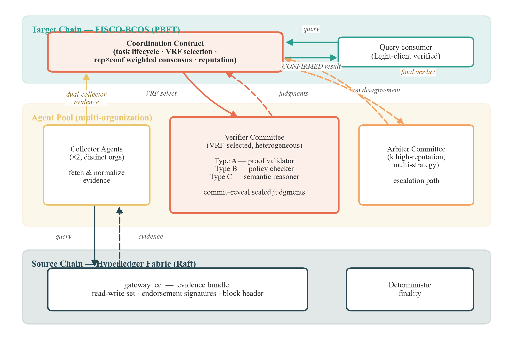
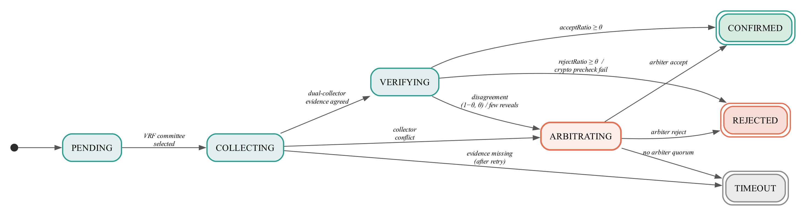
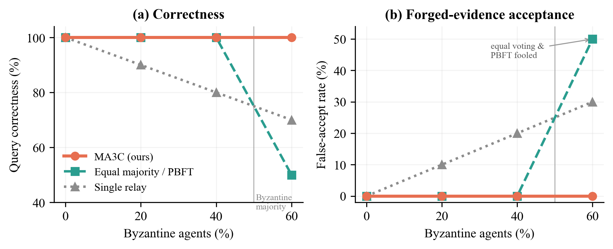
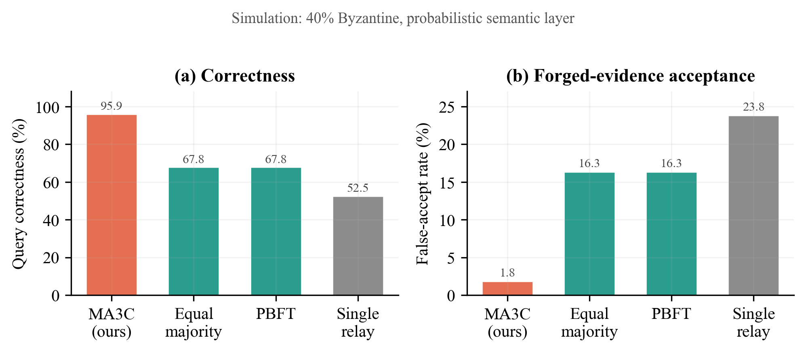
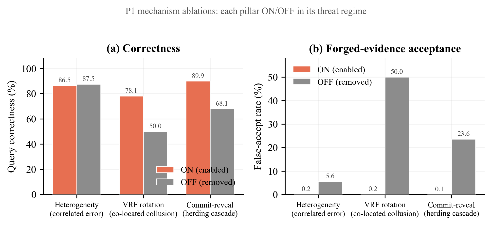

面向跨链语义查询的智能合约可信调用链下智能体协议
作者(投稿时填写;盲审版本请匿名): 第一作者¹,第二作者²,通讯作者¹*
单位: ¹ ××大学 ××学院;² ××研究院
邮箱: {author1, corresponding}@example.edu * 通讯作者
摘要
智能合约是确定性执行环境，无法直接访问外部大模型、外部 API 或链下业务系统；当区块链应用从资产转移走向跨组织业务协同时，合约却越来越需要消费复杂的链下语义判断。传统的预言机与跨链中继主要传递数据与状态证明，难以处理密码学有效但业务语义不确定的查询——源链状态的密码学证明只能说明数据存在且未被篡改，不能说明其是否满足目标链的业务语义、时序约束与合规规则。本文提出一种可信的智能合约到链下智能体调用（smart-contract-to-agent invocation）协议，使合约能够通过链上事件异步调用由不同组织运营的链下智能体，并通过 commit-reveal 密封提交、信誉与置信度加权聚合、仲裁升级与链上信誉问责安全地消费智能体输出。协议不假设链上合约能够判定语义真值，而是在明确的威胁模型下，借助 Byzantine-robust 多智能体冗余执行降低错误链下输出被合约接受的概率，并提供可审计、可问责的执行记录。博弈论分析证明，在理性参与者条件下，诚实执行并如实报告置信度构成占优策略均衡，满足激励相容性、个体理性和联盟防护性质。我们以异构联盟链（Hyperledger Fabric 与 FISCO-BCOS）跨链语义查询作为主要应用场景实现原型并评估：乐观路径确认延迟约 8 秒，仲裁路径约 21 秒。基于真实智能体的实验显示，在 40% 恶意智能体下本协议维持约 96% 的查询正确率（对比等权投票约 68%），误受率由 16% 降至 2%；当恶意智能体占调用委员会多数（60%）时，等权投票与 PBFT 因伪造证据获得多数票而沦陷（误受率 50%），而本协议凭借阈值机制与仲裁升级维持 100% 正确率与 0% 误受率（配对检验 p<0.01）。我们进一步报告任务成功率、端到端与分阶段延迟、链上成本、仲裁开销以及组织/模型异构性带来的去中心化约束效果。
关键词: 智能合约调用链下智能体;跨链语义查询;Byzantine-robust 多智能体聚合;commit-reveal;置信度加权;信誉与链上问责;仲裁机制;联盟区块链
Index Terms: smart-contract-to-agent invocation, cross-chain semantic query, Byzantine-robust multi-agent aggregation, commit-reveal, confidence-weighted aggregation, reputation and on-chain accountability, arbitration, consortium blockchain
I. 引言
智能合约是确定性执行环境：相同输入在所有节点上必须产生相同输出，因此合约不能直接调用外部大模型、Web API 或链下业务系统。然而随着区块链应用从单纯的资产转移走向跨组织业务协同，合约需要消费的链下判断日益复杂——不再只是"某价格是多少"这类数值喂价，而是"这批发货记录是否真实满足融资放款条件""这家企业的上链数据是否符合监管合规规则"这类需要收集证据、关联多源、进行语义推理的判断。现有的预言机与跨链中继能够把数据和状态证明搬上链，但无法充分解决链下智能体输出的可信调用、抗恶意聚合和链上问责问题。
这一矛盾在联盟区块链的跨链协同中尤为突出。不同组织通常部署独立的区块链网络——Hyperledger Fabric 用于企业工作流，FISCO-BCOS 用于金融服务——各自维护权威记录。当一个组织的业务合约需要消费另一组织链上记录时，便产生跨链查询需求。当前方案主要有三类：用于原子交换的哈希时间锁定合约、用于资产转移的侧链桥接，以及用于通用消息传递的中继协议；其中中继最为灵活，但大多数中继设计将信任委托给单个中继节点或静态公证人委员会，一旦中继被攻破或恶意行为，目标链没有独立手段检测错误。IEEE 3221.01-2025 标准[10]承认了这一局限性，并将中继治理确定为一个开放问题。
需要强调的是，并非所有跨链查询都需要链下智能体。对于状态存在性与证明有效性查询——某交易是否已上链、某 Merkle 证明是否成立——传统密码学机制已经足够。本文关注的是另一类查询：密码学证据有效，但业务语义未必成立。在供应链金融中，发货记录确实存在于源链，并不等于融资条件真实满足；在监管审计中，企业数据确实已上链，并不等于其满足合规规则。这类判断本质上是概率性的——不同推理方法可能得出不同结论——单一中继或单一预言机无从独立核验，这正是需要把合约的调用分发到多个链下智能体、并对其输出做 Byzantine-robust 聚合的场景。近期关于 LLM 多智能体系统中 Byzantine robustness 与 confidence-weighted aggregation 的研究[2]为此提供了理论支撑：加权聚合即使在相当比例的参与者故障时仍能维持正确性。
这些多智能体可靠性的研究为可信调用提供了量化支撑。CP-WBFT 协议[2]通过基于置信度的加权，在 85.7% 的故障率下仍实现可靠共识；Six Sigma Agent 架构[5]证明系统错误随独立验证者数量呈指数级下降：P_sys = O(p^{⌈n/2⌉})。这些结果表明，将合约对链下语义任务的调用分发到多个智能体并配合适当的聚合机制，可以显著降低单一恶意、错误或沉默智能体对最终结果的影响。但要把这一思想落到链上合约可信消费的工程现实，还需解决合约无法直连模型、智能体可能串谋或扣留、同组织/同模型导致相关失败、以及结果必须可问责等一系列问题——这正是本文协议要回答的。
我们因此提出一种可信的 smart-contract-to-agent invocation 协议：合约不直接执行复杂链下语义任务，而是通过链上事件异步调用由不同组织运营的链下智能体，并通过 Byzantine-robust 聚合、信誉机制、仲裁机制和链上问责机制安全消费智能体输出。我们将该协议实例化到异构联盟链跨链语义查询这一典型场景，并在此明确区分密码学可验证层与业务语义判断层。本文的主要贡献为：
- 调用模型。 提出 smart-contract-to-agent invocation 模型，刻画智能合约异步调用链下智能体执行复杂语义任务的问题，明确"合约不判定语义真值、只降低错误输出被接受的概率并保留问责记录"的安全边界。
- 可信调用协议。 设计完整的调用协议，包括链上任务发布、链下智能体执行、commit-reveal 密封提交、信誉与置信度加权聚合、仲裁升级与信誉问责；博弈论分析证明在理性参与者条件下，诚实执行并如实报告置信度构成占优策略均衡。
- 跨链语义查询实例化。 将协议实例化到联盟链跨链语义查询，区分确定性密码学检查（单智能体、无需共识的前置门控）与概率性语义推理（多智能体聚合），为何时以及为何调用聚合提供原则性论证。
- 原型与评估。 在 Fabric/FISCO-BCOS 原型上评估协议在恶意智能体、沉默攻击、证据冲突、链上成本与去中心化约束下的表现。
本文其余部分组织如下：第II节回顾相关工作；第III节定义系统模型和威胁模型；第IV节介绍协议设计；第V节提供博弈论分析；第VI节讨论残余安全性质；第VII节分析性能；第VIII节描述实验评估；第IX节总结全文。
II. 相关工作
A. 跨链互操作性
跨链互操作性在公有链背景下已被广泛研究。基于公证人的方案依赖可信中介来证明跨链事件。基于HTLC的协议[13]实现了无信任的原子交换，但仅限于资产交换场景。基于中继的方法在目标链上维护轻客户端或验证合约以验证源链状态；近期工作提出可扩展的跨链桥[17]并对桥异常进行监测[18]。zkBridge通过使用零知识证明进行区块头验证消除了外部信任假设，但其计算开销对于联盟链部署仍然显著。联盟链互操作的安全与隐私问题已有系统性综述[14][15]。
针对联盟区块链，Hyperledger Cacti框架（前身为Weaver）[11]为Fabric到Fabric和Fabric到Besu的互操作提供中继基础设施。WeCross[12]通过统一资源模型支持FISCO-BCOS与Fabric之间的跨链交互。HMNG-CCM机制[1]在Fabric上引入了基于PageRank信誉评估的分层管理公证人组，PowerTrust 等算法亦被用于中继链的信誉治理[16]。然而，这些解决方案要么假设固定的中继拓扑，要么缺乏对中继不当行为的形式化处理。
Proof of Repute Consensus（PoRC）框架[7]提出了一种两层架构，将链内共识0与链间协作分离，使用行为驱动的信誉来治理跨链参与。虽然PoRC解决了中继选择问题，但它没有对验证过程本身进行建模，也没有提供解决中继节点间分歧的机制。
B. 多智能体共识与可靠性
随着基于LLM的智能体的出现，多智能体系统中的Byzantine容错受到了新的关注。Zheng等人[2]提出CP-WBFT，一种基于置信度探测的加权BFT机制，通过赋予对其判断具有更高置信度的智能体更大影响力，在极端故障条件下实现共识。Luo等人[3]将这一思想扩展到基于区块链的多LLM网络，采用加权BFT共识，其中投票权重结合了响应质量和历史信任。Jo和Park[4]提出DecentLLMs，一种无领导者架构，其中评估智能体独立评分工作者输出，截断均值聚合过滤Byzantine影响。Ding等人[8]与Qi等人[9]进一步研究了去中心化多智能体系统中的信任感知通信与激励相容协作。
Six Sigma Agent架构[5]证明，冗余独立执行配合多数投票可实现指数级可靠性提升。对于n个具有个体错误率p的智能体，系统错误率的上界为O(p^{⌈n/2⌉})。这一理论结果激发了我们使用多个独立验证者进行跨链证据验证的设计。
Cemri等人[6]进行了首个多智能体故障模式的系统性研究，识别了三个类别中的14种故障模式：系统设计问题（44.2%）、智能体间不对齐（32.3%）和任务验证失败（23.5%）。他们的发现为我们的协议设计提供了参考，特别是commit-reveal机制（防止智能体间相互影响）和显式超时处理（防止无限期停滞）。
C. 本工作的定位
现有跨链解决方案与预言机关注的是数据与状态证明的传递：中继选择、消息传递、轻客户端验证，但将"如何让链上合约可信地消费链下复杂语义判断"视为黑盒——它们能证明数据存在且未被篡改，却不处理链下智能体输出的可信调用、抗恶意聚合与链上问责。另一方面，现有多智能体 BFT 共识工作处理通用决策问题，未考虑区块链证据的特定属性（确定性终局性、密码学证明、结构化状态），也未将其嵌入"智能合约异步调用链下智能体"的链上协议中。本工作在二者交集上，提出一个可信的智能合约到链下智能体调用协议：以加权 BFT 聚合安全消费智能体输出，利用联盟区块链证据的确定性特性把确定性密码层与概率性语义层分离，并以链上协调合约提供选组、聚合、仲裁与问责，同时维持形式化安全保证。
表 A 从两条研究脉络出发，对代表性工作的核心贡献与关键局限作横向对比，并标明本工作的定位（该表为相关工作概览，不计入正文表序）。
表 A. 相关工作横向对比。
| 脉络 | 代表工作 | 核心贡献 | 关键局限（相对本工作） |
|---|---|---|---|
| 跨链互操作 | 分层管理公证人组 [1] | 基于 PageRank 信誉评估的分层公证人组 | 假设固定/分层公证人拓扑，未建模验证决策本身，无分歧解决机制 |
| 跨链互操作 | HTLC 原子互换 [13] | 无信任的高效原子资产交换 | 仅限资产互换，不支持通用跨链查询的状态验证 |
| 跨链互操作 | 中继/桥基础设施 [11][12][17] | Cacti/WeCross/Alba 提供 Fabric–Besu/FISCO 互操作与可扩展桥 | 固定中继拓扑或单点/静态委员会信任，对中继误行为无形式化处理 |
| 跨链互操作 | PoRC [7] | 行为驱动信誉治理中继选择，链内/链间分离 | 不建模验证过程，无中继节点间分歧的解决机制 |
| 多智能体共识 | CP-WBFT [2] | 置信度探测加权 BFT，极端故障率下达成共识 | 面向通用决策，未利用区块链证据的确定性，无激励/博弈分析 |
| 多智能体共识 | WBFT / Trusted MultiLLMN [3] | 响应质量 + 信任加权 BFT，驱动多 LLM 网络选最优回答 | 主观「最优回答」偏好聚合而非客观验证；信任不建模（假设其分布）；无博弈论；仅仿真评估 |
| 多智能体共识 | DecentLLMs [4] | 无领导者架构，截断均值聚合过滤拜占庭影响 | 通用评分聚合，无信誉演化与串通检测，无激励相容保证 |
| 多智能体可靠性 | Six Sigma Agent [5] | 冗余独立执行 + 多数投票，错误率 O(p^⌈n/2⌉) | 仅理论可靠性界，等权多数，无加权/信誉/仲裁升级 |
| 信任/激励协作 | 信任感知通信与激励协作 [8][9] | 去中心化多智能体的信任感知通信与激励相容协作 | 面向通用多智能体，未针对跨链证据，无确定性/概率性双层验证分离 |
| 本工作（MA3C） | 可信智能合约到链下智能体调用协议（跨链语义查询） | 链上协调合约异步调用链下智能体；确定性密码层与概率性语义层分离；rep×conf 加权聚合 + VRF 选组 + commit-reveal + 风险自适应阈值 + 仲裁升级 + 签名问责；占优策略均衡的博弈论保证；真实跨链原型 + 真智能体实验 | — |
如表所示，跨链/预言机脉络的工作普遍只传递数据与状态证明、将链下语义判断的可信消费视为黑盒、缺乏分歧解决；多智能体共识脉络则处理通用决策，未利用区块链证据的确定性特性、未嵌入链上调用协议，且多数（含 [3]）不建模信任演化、不提供激励相容的形式化保证。本工作在二者交集上，以"智能合约到链下智能体调用"协议、确定性/概率性双层分离与博弈论激励相容机制填补该空白。
III. 系统模型与威胁模型
A. 系统模型
我们考虑一个包含两条或多条联盟区块链（如 Hyperledger Fabric 和 FISCO-BCOS）的系统，业务合约需要消费跨链的语义判断。每条区块链维护其自身的共识机制，提供确定性终局性：一旦交易被提交，将不会被回滚。由于智能合约无法直接调用链下模型与外部系统，我们将系统组织为三层，使合约能够异步调用链下智能体并安全消费其输出：
- 链上协调层（Invocation Coordinator Contract）：部署在目标链（或专用中继链）上的智能合约，负责注册智能体、发布调用任务、记录承诺（commit）、接收揭示（reveal）、聚合结果、更新信誉并在分歧时触发仲裁。它是合约世界与链下智能体之间唯一的可信中介，所有调用与问责记录均经由它落账。
- 链下智能体调用网络（Off-chain Agent Invocation Network）：由联盟生态中不同组织运营的智能体，监听链上事件、执行证据收集、规则检查、LLM 语义推理与结果签名，并将密封判断提交回协调合约。
- 应用层（Application Layer）：跨链语义查询应用，例如 Fabric 到 FISCO-BCOS 的供应链金融、监管审计或冷链核验——业务合约在此发起调用并消费结果。
其中两条链分别承担：
- 源链：被查询状态信息的区块链，经其网关链码提供具确定性终局性的证据（读写集、背书签名、区块头）。
- 目标链：发起调用并消费智能体输出的区块链，托管协调合约。
系统整体架构如图 1 所示,合约异步调用链下智能体的整体时序如图 2 所示。

图 1. 系统架构。目标链(FISCO-BCOS)托管协调合约 Invocation Coordinator Contract(任务生命周期、VRF 选择、rep×conf 加权聚合、信誉与问责);链下智能体调用网络含双收集者、异构执行委员会(A 证明验证器 / B 策略检查器 / C 语义推理器)与高信誉仲裁组;源链(Hyperledger Fabric)经 gateway_cc 提供具确定性终局性的证据(读写集、背书签名、区块头)。

图 2. 智能合约到链下智能体的调用时序(链上/链下泳道)。① 业务合约发起调用;② 协调合约创建任务并发出 TaskCreated 事件——合约异步调用智能体,从不直接调用模型;③ VRF 选出的链下委员会收集证据并语义推理;④ 以 commit-reveal 提交带签名的密封判断;⑤ 协调合约执行 rep×conf 加权聚合;⑥ 出现分歧或挑战时升级至仲裁并结算。结果回传业务合约消费,且经签名与链上锚定可问责。
链下智能体（统称执行智能体）按职责分为三种角色：
- 收集智能体与源链节点交互以检索证据（交易回执、状态证明、区块头）。
- 验证智能体通过双层过程处理收集的证据：(1) 对证明和签名的密码学验证（确定性），(2) 使用大语言模型对业务逻辑一致性进行语义推理（概率性）。多智能体聚合作用于第二层，在该层中独立的 LLM 推理可能产生不同判断。第 VIII-D 节的真实 LLM 校准从经验上验证了此分层的必要性:确定性层对结构/密码类篡改 100% 拦截,语义层在结构完整证据上实测误差极低。
- 仲裁智能体仅在标准调用流程未能达成一致时被激活。仲裁者以增强的上下文同时执行密码学验证和语义推理。
验证智能体采用三种互补策略：
- A类型（证明验证器）：执行确定性密码学验证——Merkle proof重构、背书签名校验和数据完整性检查。该层作为前置门控：若密码学验证失败，任务立即被拒绝，无需进入共识。
- B类型（策略检查器）：验证背书策略合规性并应用基于规则的业务约束。结合确定性策略匹配与LLM辅助的复杂多条款策略解释。
- C类型（语义推理器）：使用LLM执行概率性语义验证——跨源数据关联分析、时序一致性分析、异常模式检测和业务逻辑推理。这是产生判断多样性的主要来源，也是多智能体共识存在的根本理由。
执行策略的异构性确保错误模式相互独立：A 类型错误源于适配器实现缺陷，B 类型错误源于策略解释歧义，C 类型错误源于 LLM 推理局限。这种独立性降低了错误相关系数 ρ，直接提升聚合可靠性，这一点已被先前关于冗余独立验证的研究所证实。需要强调，多个智能体并不自动意味着真正独立：若多个智能体调用同一模型或同一 LLM provider，其错误会高度相关，从而削弱聚合的容错能力（第 VIII 节实测此相关失败效应）。因此本协议在选组时强制 LLM 后端与运营组织的异构性，作为对相关失败的工程约束。
B. 威胁模型
信任假设：
- 每条联盟区块链的内部共识是健全的。源链上已提交的数据是真实且最终的。
- 协调合约正确执行（由宿主区块链的共识保证）。
- VRF 实现是密码学安全的。
对手能力： 对手控制部分链下智能体，在任何大小为 n 的调用委员会中控制至多 f < ⌊n/2⌋ 个智能体；被控制的智能体可发动以下行为：
- 恶意判断：无论证据如何，恶意提交错误判断——对无效任务返回 ACCEPT（伪造接受）或对有效任务返回 REJECT（伪造拒绝）。
- 沉默攻击：提交承诺（commit）后扣留揭示（reveal），试图阻塞调用或拖延终结。
- 串谋：多个被控智能体协调其投票以放大影响。
- 同组织控制多个智能体：单一组织运营多个智能体以在委员会中获取超额权重，逼近或突破 Sybil 边界。
- 相关失败：多个智能体调用同一 LLM 模型或同一 provider，使其错误高度相关，从而以"看似独立的多数"绕过聚合容错。
- 虚报置信度：智能体夸大其判断的置信度以放大投票权重。
- 证据冲突：收集智能体提交过期、相互冲突或不完整的证据，试图误导后续语义推理。
- 策略性对手：通过诚实行为积累信誉后再发动上述攻击。
对手无法伪造源链数据（受源链共识保护），也无法在选组前预测 VRF 输出。
安全边界（重要）： 本文不假设链上合约能够判定 LLM 推理是否语义正确，也不声称协议"验证了语义真值"。本文提供的是对链下智能体输出的可审计、可问责、Byzantine-robust 的消费机制：在给定恶意智能体比例、组织/模型异构约束、信誉边界与仲裁机制的条件下，降低错误链下输出被合约接受的概率，并保留可追责记录。语义判断的不可完全验证性被显式列为协议的固有边界（参见第 VI 节 limitation）。
安全目标：
- 安全性：在上述威胁模型与约束下，协议降低错误智能体输出（伪造接受或伪造拒绝）被合约接受为 CONFIRMED/REJECTED 的概率；恶意输出越过接受阈值的难度随委员会规模与异构约束提升。
- 活性：每个调用任务最终在全局超时范围内以确定性结果（CONFIRMED、REJECTED 或 TIMEOUT）终止。
- 可问责性：每个参与智能体的输出经签名记录且可归属，支持事后审计和信誉调整。
C. 主要符号与参数
本文主要符号及其默认取值汇总于下表(为命名法参考,不计入正文表序)。
| 符号 | 含义 | 默认值 |
|---|---|---|
| n | 调用委员会大小 | 5 (NORMAL) / 7 (CRITICAL) |
| f | 调用委员会中恶意智能体数上界 | < ⌊n/2⌋ |
| k | 仲裁组大小 | 5 |
| θ | 共识阈值(接受/拒绝) | 0.70 (NORMAL) / 0.75 (CRITICAL) |
| θ_arb | 仲裁共识阈值 | 0.75 |
| θ_min | 入选最低信誉阈值 | 应用层设定 |
| rep_i | 智能体 i 的信誉 | [rep_min, rep_max] |
| conf_i | 智能体 i 揭示的置信度 | [0, 1] |
| w_i | 投票权重 = rep_i × conf_i | 式(1) |
| w_max / w_min | 单体最大/最小权重 | w_max / w_min ≤ 2 |
| c_min | 最低诚实置信度 | 0.6 |
| Ratio | 加权接受比率 | 式(2) |
| α₁ … α₅ | 对齐评分参数(非对称) | 1.0 / 0.5 / 0.3 / 1.5 / 2.0 |
| λ_r | 风险缩放因子 | 1.0 (NORMAL) / 1.5 (CRITICAL) |
| decay | 信誉衰减系数 | 0.98 |
| σ²_max | 对齐方差异常阈值(观察期触发) | 经验设定 |
| m | 串通检测最小共同参与任务数 | 50 |
| ρ_max | 串通判定相关性阈值 | 0.9 |
| L_max | 单体最大并发任务数 | 应用层设定 |
| q | 证据有效的先验概率 | 0.8 |
| p_i | 智能体 i 的验证错误率 | 由类型决定 |
IV. 协议设计
本节详细介绍调用协议。协议经历四个阶段：证据收集、密封执行、加权聚合，以及（必要时的）仲裁。我们首先定义调用任务抽象，然后描述每个阶段。
A. 调用任务模型
业务合约发起的跨链语义查询被协调合约封装为调用任务 T_inv：
其中：
- id：由协调合约生成的唯一任务标识符
- caller：发起调用的业务合约或用户（结果将被回传消费的位置）
- src：源链标识符和端点规范（证据被收集的位置）
- task_spec：链下智能体需要执行的语义任务描述（合约地址、函数、参数、预期区块高度范围，以及待判定的业务语义谓词）
- evidence_spec：智能体需要收集或校验的证据类型（读写集、背书签名、区块头、跨源关联字段）
- risk ∈ {NORMAL, CRITICAL}：风险分类，决定委员会大小和接受阈值
- deadline：全局超时的绝对时间戳
- status ∈ {PENDING, COLLECTING, VERIFYING, ARBITRATING, CONFIRMED, REJECTED, TIMEOUT}
需要强调，调用任务的目标不是让链上合约直接验证语义真值，而是在明确威胁模型下，通过多智能体冗余执行、签名提交、加权聚合和仲裁问责，降低错误链下输出被合约接受的概率。风险分类由注册在协调合约中的应用层规则确定。例如，涉及超过阈值的资产价值或监管审计请求的查询被分类为 CRITICAL。任务在其生命周期中经历的状态转移如图 3 所示。

图 3. 调用任务的生命周期状态机。乐观路径为 PENDING→COLLECTING→VERIFYING→CONFIRMED/REJECTED;当出现聚合分歧(比率落在 1−θ 与 θ 之间)、收集者证据冲突或有效揭示不足时,任务升级至 ARBITRATING(仲裁路径);各阶段超时则进入 TIMEOUT。CONFIRMED、REJECTED、TIMEOUT 为终态。
B. 调用委员会选择
任务创建后，协调合约通过算法 1 组建调用委员会G，下文逐步说明各步骤。
算法 1. 调用委员会选择(VRF 加权随机选择)
步骤1. 确定组大小。
步骤2. 筛选合格智能体。
其中θ_min为最低信誉阈值，capable(a, src)表示智能体支持源链类型，L_max限制并发任务参与数。
步骤3. VRF加权随机选择。
合约使用当前区块提议者的VRF计算可验证随机种子：
从候选集C中，以与信誉分数成比例的概率选择n个验证智能体。VRF输出确保选择在任务创建前不可预测，且事后可验证。
步骤4. 强制约束。
- 组织多样性：来自同一组织的智能体 ≤ ⌊n/3⌋
- 策略异构性：选定的组必须包含至少两种不同的验证策略类型（第III-A节定义的A、B或C类型）
如果约束被违反，来自过度代表类别的最低信誉智能体将被下一个合格候选者替换。
步骤5. 选择收集智能体。
从注册为源链服务的智能体池中独立选择两个收集智能体。它们必须属于不同组织。
C. 阶段1：证据收集
两个被选中的收集智能体独立查询源链，并将结果打包为标准化证据结构：
证据格式因链而异，但由适配器层进行归一化。对于Fabric，包括读写集、背书者签名和区块元数据。对于FISCO-BCOS，包括交易回执、状态证明和共识节点签名。
收到两个证据包E₁和E₂后，协调合约执行确定性比较：
- 如果E₁和E₂实质相同（相同的state_data和一致的证明）：证据被接受为E = E₁，任务进入阶段2。
- 如果E₁和E₂不同：在确定性终局性下，这表明收集者故障或网络分区。任务状态直接转换为ARBITRATING，两个证据包均保留供仲裁者审查。
收集阶段有超时T_collect。如果在此窗口内收到的证据包少于两个，缺失的收集者被标记为无响应（信誉惩罚），并选择替代收集者进行一次重试。如果重试也失败，任务转换为TIMEOUT。
D. 阶段2：密码学预验证
指定的A类型智能体对收集的证据E执行确定性密码学验证：
- 从Merkle proof重构状态根，与区块头比对。
- 验证所有背书签名与源链已知公钥的一致性。
- 确认区块高度在查询的预期范围内。
该阶段产生二元结果：
- 通过：证据在密码学上有效。任务进入阶段3。
- 失败：证据包含无效证明或签名。任务立即被REJECT，无需进入共识。
由于密码学验证是确定性的，单个智能体即可完成。结果记录在链上，任何方均可独立重新验证。该阶段在产生LLM语义验证成本之前过滤伪造或损坏的证据。真实 LLM 校准实测证实了该前置门控的有效性:对密码失败、缺交易哈希、高度越界等结构/密码类篡改,确定性层实现 100% 拦截(误差 0),使其不进入语义共识;语义层仅承担确定性手段无法判定的业务一致性推理(如跨源载荷不符),在该子集上 8B 级 LLM 实测误差极低(详见第 VIII-D.3 节)。
E. 阶段3：语义执行（Commit-Reveal）
调用委员会中的每个执行智能体独立对证据 E 执行语义推理并产生签名输出：
其中：
- judgment_i ∈ {ACCEPT, REJECT}：基于语义分析的链下决策
- confidence_i ∈ [0, 1]：智能体的自评确定性，源自 LLM 推理置信度
- evidence_hash_i = H(E_i)：智能体实际据以判断的链下证据哈希，使其判断可绑定到具体证据快照，便于事后核验与冲突归因
- reason_hash_i = H(reason_text_i)：详细推理链/解释的哈希（链下存储，可供审计）
- model_id_hash_i = H(model_id_i)：可选，记录所用模型来源或模型类别的哈希，用于审计模型异构性约束、识别相关失败（多个智能体使用同一模型/provider）
- agent_signature_i：智能体对上述输出的签名，提供不可否认的可问责归属
合约据此可对每条链下输出做签名归属与证据绑定，这是协议链上问责性的基础。揭示落账后开启一个可挑战时间窗口 challenge_window：在该窗口内，任何参与方可凭冲突证据或失败的密码学重验对某条输出发起挑战，触发仲裁路径（第 G 节）。
语义验证过程取决于智能体的策略类型：
- B类型（策略检查器）：使用LLM辅助推理解释复杂背书策略和多条款业务规则。评估证据是否满足领域特定的合规要求。
- C类型（语义推理器）：执行深度语义分析——跨源数据关联（如物流时间线是否与生产记录吻合？）、时序一致性检查（如温度曲线对于运输时长是否物理合理？）和异常模式检测（如该交易是否偏离历史规范？）。
每个智能体构建包含证据、查询上下文和相关历史数据的验证提示词，然后从其LLM后端获取结构化判断。置信度分数反映LLM对其推理的评估确定性，类似于先前LLM多智能体可靠性研究中建立的Prompt-level Confidence Probe (PCP)机制。
提交阶段： 每个智能体提交承诺：
到协调合约。合约记录所有承诺及其时间戳。
揭示阶段： 在所有承诺收到（或 T_commit 到期）后，合约开启揭示窗口。每个智能体以明文提交 (judgment_i, confidence_i, evidence_hash_i, reason_hash_i, model_id_hash_i, agent_signature_i, nonce_i)。合约验证每个揭示与其承诺的一致性，并校验 agent_signature_i 的有效性。
超时强制：
- 未在 T_commit 内提交承诺的智能体被排除在聚合之外，并受到信誉惩罚。
- 提交承诺但未在 T_reveal 内揭示的智能体被视为执行沉默攻击：受到严重信誉惩罚，其承诺被丢弃。
- 如果有效揭示数量降至 ⌈n/2⌉ + 1 以下，任务转换为 ARBITRATING。
F. 阶段3：加权聚合
在收集所有有效揭示后，协调合约按算法 2 计算聚合结果。
算法 2. 加权聚合决策
下文给出权重、聚合与阈值的具体定义。
权重计算：
其中rep_i为智能体当前信誉分数，conf_i为揭示的置信度值。式(1)即投票权重。
信誉的双因子构成。 信誉分数 rep_i 综合两个维度：响应质量分量 A_i（智能体在调用任务上的表现质量）与历史信任分量 B_i（即第 IV-H 节按式(6)累积维护的对齐信誉）。二者各自在组内归一化后线性组合：
默认 α = 0.4、β = 0.6（信任分量权重略高于质量分量，与加权 BFT 中"信任比质量更影响共识安全性"的经验观察一致[3]）。将式(1a)代入式(1)，单个智能体的有效投票权重展开为
该双因子设计在结构上吸收了文献[3]的"质量 + 信任"加权，但本方案进一步乘以单次自报置信度 conf_i，并叠加风险自适应阈值（式(4)）与仲裁升级（第 IV-G 节）——后三者是[3]所不具备的，也是本方案在客观可验证场景下区别于通用 WBFT 的关键。
分数聚合：
决策规则：
阈值推导。 阈值θ必须确保即使所有f个恶意智能体以最大权重一致投票支持错误结果，诚实多数仍能占优。
设w_max表示单个智能体的最大可能权重（受信誉上限和confidence = 1.0限制），w_min表示诚实智能体的最小权重（最低信誉 × 最低诚实置信度c_min）。
安全条件要求：
求解θ：
对于n = 5, f = 2, w_max/w_min = 2（信誉上限为最低值的两倍），c_min = 0.6：
我们设定NORMAL任务θ = 0.70，CRITICAL任务θ = 0.75，提供安全余量。
G. 阶段4：仲裁
仲裁在以下情况触发：
- 加权聚合比率落在1−θ和θ之间（分歧）。
- 证据收集产生不一致结果（收集者冲突）。
- 过多智能体未能揭示（参与不足）。
仲裁者选择： 协调合约通过VRF从仲裁者池中选择k = 5个仲裁智能体，受相同的组织多样性约束。仲裁智能体通常具有更高信誉（必须超过更严格的阈值θ_arb > θ_min），且能够执行所有三种验证策略。
仲裁者输入： 每个仲裁者接收完整的任务上下文：原始查询、所有收集的证据（包括冲突证据，如适用）、所有验证者判断和置信度分数，以及推理哈希。
仲裁过程： 仲裁者遵循与验证者相同的 commit-reveal 协议。仲裁聚合使用相同的加权投票公式（式(1)–(3)，算法 2），但使用仲裁组的参数（k = 5，所有任务θ_arb = 0.75）。
终局性： 仲裁结果是最终的。如果仲裁也未能达到阈值（鉴于k = 5和更高信誉的参与者，这极为罕见），任务被标记为TIMEOUT，不向目标链交付结果。
H. 信誉更新
任务达到终态（CONFIRMED、REJECTED或TIMEOUT）后，协调合约按算法 3 更新所有参与智能体的信誉。
算法 3. 信誉更新与异常/串通检测
对齐评分：
其中α₁ > α₂ > 0 > −α₃ > −α₄ > −α₅。这种不对称性对过度自信的错误判断施加更重的惩罚，激励智能体诚实报告置信度。
信誉更新：
其中decay = 0.98提供对远期历史的渐进遗忘，λ_r ∈ {1.0, 1.5}根据任务风险级别缩放更新幅度。
信誉边界： rep_i被限制在[rep_min, rep_max]内，防止无限积累或崩溃。
异常检测： 最近k = 10个任务的滑动窗口监控每个智能体的对齐方差。如果方差超过阈值σ²_max，智能体进入观察期，其选择概率减半。
串通检测： 对于每对在至少m = 50个任务中共同参与的智能体(i, j)，合约在最近 m 个争议任务（至少一个智能体不同意的任务）的滑动窗口上计算其判断的条件相关性。如果该相关性超过ρ_max = 0.9，该对的共同选择概率降低。第 VIII-D.4 节的实测表明，该窗口需约 50 个争议任务方能稳健区分串通与诚实独立误差（较小窗口误报率偏高）。
V. 博弈论分析
传统 BFT 分析假设参与者为诚实/恶意的二元划分。在联盟链环境中，智能体由具有经济利益的组织运营，更适合建模为理性参与者——它们选择最大化自身效用的策略。本节证明在我们的机制下，诚实执行调用任务（即下文策略变量 e_i = VERIFY）并如实报告置信度构成唯一的占优策略均衡。
A. 博弈模型
参与者。 调用委员会 G = {a₁, ..., aₙ} 中的n个验证智能体。
策略空间。 每个智能体aᵢ选择策略 sᵢ = (eᵢ, jᵢ, cᵢ)，其中：
- eᵢ ∈ {VERIFY, SKIP}：是否执行实际验证（成本v）或搭便车
- jᵢ ∈ {ACCEPT, REJECT}：提交的判断
- cᵢ ∈ [0, 1]：报告的置信度
私有信息。 若 eᵢ = VERIFY，智能体aᵢ获得私有信号σᵢ，准确率 P(σᵢ = ω) = 1 − pᵢ，其中 ω ∈ {VALID, INVALID} 为真实状态，pᵢ为智能体类型相关的错误率。若 eᵢ = SKIP，智能体不获得信号。
收益函数。 智能体aᵢ在单次任务中的效用为：
其中R为基于alignment的信誉奖励，V(VERIFY) = v，V(SKIP) = 0，F为信誉的折现未来价值（更高信誉增加未来被选概率）。
alignment奖励R遵循第IV-H节定义的非对称评分机制，关键性质为 α₄/α₃ = 5：过度自信的错误判断受到的惩罚是谨慎错误的5倍。
B. 定理1：诚实验证严格优于搭便车
定理。 设 v < (1−p_max)(α₁−α₂) + p_max(α₃−α₄) + qα₂ − (1−q)α₃，其中 q = P(ω = VALID) 为证据有效的先验概率。则对于错误率 pᵢ ≤ p_max 的任意智能体aᵢ，诚实策略 (VERIFY, σᵢ, 1−pᵢ) 的期望效用严格高于任何搭便车策略 (SKIP, ·, ·)。
证明。 搭便车智能体无私有信号，只能猜测。最优搭便车策略为投票ACCEPT（因q > 0.5）并报告低置信度（c ≤ 0.7）以限制下行风险。其期望奖励为：
准确率 1−pᵢ > 0.7 的诚实智能体报告高置信度，获得：
效用差为：
其中 ΔF > 0 反映诚实验证的长期信誉优势。代入参数（pᵢ = 0.05, q = 0.8, v = 0.2, α₁ = 1.0, α₂ = 0.5, α₃ = 0.3, α₄ = 1.5）：
由于 ΔF > 0 严格成立（诚实智能体积累信誉更快），总效用差 Δu > 0.335 > 0。□
临界验证成本阈值为 v_critical = 0.535。只要验证的计算成本低于此界，搭便车即为严格被占优策略。
C. 定理2：置信度如实报告的激励相容性
定理。 在alignment评分机制下，对于错误率 pᵢ < 1/(1 + (α₄−α₃)/(α₁−α₂)) 的任意智能体，如实报告置信度 cᵢ = 1−pᵢ 最大化期望奖励。
证明。 准确率 1−pᵢ > 0.7 的智能体在报告高置信度（c > 0.7，如实）与低置信度（c ≤ 0.7，虚报）之间选择：
当 (1−pᵢ)/pᵢ > (α₄−α₃)/(α₁−α₂) 时为正。代入参数：
条件变为 pᵢ < 1/3.4 ≈ 0.294，对所有合格智能体（准确率 > 70%）成立。
对称地，准确率 1−pᵢ ≤ 0.7 的智能体发现虚报高置信度（报告 c > 0.7）的期望收益为负，因为过度自信错误的重罚α₄超过了α₁带来的收益。
该机制实现了贝叶斯激励相容性：每个智能体的最优报告反映其真实验证准确率。惩罚比率 α₄/α₃ = 5 是关键设计参数——它使过度自信的虚报成为高方差赌博，只有真正准确的智能体才能从中获利。□
D. 定理3：贿赂攻击的经济不可持续性
定理。 设B为外部贿赂金额。理性智能体在 B < B_threshold 时拒绝贿赂，其中：
ΔP_sel为信誉损失导致的选择概率下降，k_obs为观察期长度。
证明。 接受贿赂并错误投票的智能体承受：
- 即时信誉损失：−α₄ × λ_r（高置信度错误投票）
- 永久选择概率下降：ΔP_sel = Δrep / (N × rep_avg)
- 观察期惩罚（若异常检测触发）：选择概率减半持续k_obs个任务
代入参数（α₄ = 1.5, λ_r = 1.0, π = 10, δ = 0.95, N = 20, rep_avg = 0.7, k_obs = 10）：
对n = 5的调用委员会成功攻击需贿赂至少 ⌈n/2⌉ = 3 个智能体，最低攻击成本：
风险分级机制通过增大λ_r自动提升高价值任务的经济安全性。□
E. 联盟抵抗性
定理。 k个智能体的联盟攻击成功概率的上界为 O(N^{−k}) × P(权重条件满足)，其中N为智能体池大小。
证明概要。 联盟攻击需要三个条件同时满足：
(1) 共同入选：k个串通智能体必须被选入同一组。在VRF选择和组织约束下：
对于k = 3, N = 20, n = 5：P ≈ 0.009。
(2) 权重充足：联盟的聚合权重必须超过阈值。在 rep_max/rep_min = 2 的约束下，k = 2的联盟需要 rep_c/rep_h ≥ 2.8，超出信誉上限。k = 3的联盟需要 rep_c/rep_h ≥ 1.24，可实现但受约束。
(3) 逃避检测：共谋检测机制监控争议任务上的成对条件相关性。经过约 m = 50 次争议任务的共同参与后，真正串通的智能体检测概率趋近于1（实测见第 VIII-D.4 节）。
k = 3时的综合概率：P ≈ 0.009 × 0.3 × 0.001 ≈ 2.7 × 10⁻⁶/任务。□
F. 均衡刻画
主定理（激励相容性）。 在参数条件满足时：
- (C1) v < v_critical（验证成本有界）
- (C2) (α₄−α₃)/(α₁−α₂) < (1−p_max)/p_max（惩罚比率匹配准确率门槛）
- (C3) B_threshold > W/⌈n/2⌉ 对所有任务价值W成立（经济安全性）
- (C4) rep_max/rep_min ≤ (n−f)×c_min×(1−θ)/(f×θ)（信誉上限保证阈值有效性）
置信度加权聚合机制满足：
- 占优策略激励相容(DSIC)：诚实验证并如实报告置信度是每个智能体的占优策略，独立于其他智能体的策略选择。
- 个体理性(IR)：参与验证的期望效用严格为正（E[u|H] > 0）。
- k-联盟防护：联盟攻击成功概率 ≤ O(N^{−k})/任务。
- 经济安全性：攻击成本随调用委员会规模和任务风险等级线性增长。
- 动态稳定性：在重复博弈中，信誉机制作为内嵌触发策略，在单阶段激励之上进一步强化诚实均衡。
性质5源于重复博弈的Folk Theorem：由于诚实验证已是阶段博弈的占优策略（定理1），基于信誉的未来收益使均衡的稳定性严格增强。异常检测机制实现了自动惩罚触发，无需诚实智能体之间的显式协调。
VI. 安全性分析
上述博弈论结果建立了理性智能体的激励相容性。本节针对最坏情况（非理性）对手的残余安全性质进行分析。需重申第 III-B 节的安全边界：协议不判定语义真值，本节的"安全性"指错误链下输出被合约接受的概率被降低，而非语义结果被证明为真。
A. 安全性：错误输出被接受的条件
由第 V-B 节的共识安全性定理：在阈值 θ = 0.70 且信誉比受 2 约束的条件下，协议在 n = 5 的委员会中容忍 f = 2 个 Byzantine 智能体。加权聚合确保即使恶意智能体具有最高信誉并报告 confidence = 1.0，诚实多数的聚合权重仍超过阈值——即错误输出（伪造接受）越线被合约接受需要恶意权重突破 θ，该条件由第 VI-F 节的解析模型量化。
B. 抗集中化：组织、模型与 provider 约束
抗集中化分三个层面。其一，抗 Sybil：智能体注册需要组织背书，协调合约强制执行每组织智能体数量上限，VRF 选择配合同组织 ≤ ⌊n/3⌋ 的约束确保攻破单个组织无法主导任何调用委员会。其二，抗模型/provider 相关失败：仅约束组织并不足够——若不同组织的智能体调用同一 LLM 模型或同一 provider，其错误高度相关，可形成"看似独立的多数"绕过聚合容错；协议据此在选组时进一步强制 model_id_hash 维度的后端异构性（第 VIII 节实测该相关失败效应及约束收益）。其三，抗委员会集中化：VRF 每任务重选委员会，避免高信誉智能体长期垄断选择，将权力集中风险从单一中继转移并稀释，而非简单平移到固定 agent 委员会。
C. Commit-Reveal安全性
commit-reveal协议消除两类攻击向量：
- 从众攻击：智能体在提交承诺前无法观察他人判断，消除了不经独立验证而复制的动机。
- 沉默攻击：超时惩罚（−α₅ = −2.0）严格优于扣留揭示，因其超过错误揭示的最坏情况惩罚（−α₄ = −1.5）。
D. 证据完整性
证据完整性依赖于源链的确定性终局性。双收集者设计要求攻击者同时攻破来自不同组织的两个独立收集者才能伪造证据。
E. 活性
协议通过每个阶段的显式超时保证终止。状态机无循环。最坏情况路径长度满足：
F. 共识安全性的解析模型
本节为第 VI-A 节引用的共识安全性提供解析依据，并刻画误受概率随组规模与误差率的衰减。考虑 ground-truth 为 REJECT 的任务（误受即在此类任务上错误输出 CONFIRMED；对 ground-truth 为 ACCEPT 的情形对称地给出漏报界）。令组内归一化权重 Σ_i w_i = 1，恶意智能体占总权重 W_m、诚实智能体占 W_h = 1 − W_m。定义加权 ACCEPT 份额 S_A = Σ_i w_i·X_i，其中恶意智能体取 X_i = 1（伪造接受），诚实智能体以其语义误差率 p 独立取 X_i = 1。由式(2)(3)，误受当且仅当 S_A ≥ θ。
命题1（确定性层，p = 0）。 在密码/结构预验证层，诚实智能体误差为 0，故 E[S_A] = W_m，误受 ⟺ W_m ≥ θ。当组内恶意数 f ≤ ⌊(n−1)/2⌋ 且阈值满足式(4)时，最坏情况恶意权重
因而误受概率为 0，落入未决区间的分歧任务转入仲裁。该命题即式(4)的安全性表述。
命题2（概率语义层，p > 0）。 诚实智能体独立以概率 p 误判时，S_A 的均值与方差为
当组规模 n 较大时，由中心极限定理 S_A 近似正态，误受概率有闭式近似
其中 Φ 为标准正态分布的 CDF。式(7)与 [3] 的加权聚合成功率推导同构，但将“恶意权重 W_m”与“诚实语义误差 p”显式分离，从而同时刻画对抗误差与噪声误差两类来源。由此得安全设计条件 θ > W_m + p·W_h：阈值须同时压过恶意权重与诚实误差的期望贡献；当 p → 0 时退化为命题1的条件 θ > W_m。
推论1（指数可靠性）。 在等权近似 w_i ≈ 1/n 下，误受需至少 ⌈θn⌉ − f 个诚实智能体同时误判，故
误受概率随组规模 n 指数衰减。与等权多数的 O(p^{⌈n/2⌉})（即 [5] 的结果）相比，加权阈值 θ > 1/2 将指数从 ⌈n/2⌉ 提升至 ⌈θn⌉ − f，在相同 n 下提供更强的安全余量。例如 n = 5, θ = 0.70, f = 1 时本方案为 O(p³)，而等权多数仅为 O(p²)。
推论2（仲裁的乘性增益）。 当 S_A 落入 (1−θ, θ) 对应的未决区间时，任务升级至独立仲裁组（k = 5，更高信誉，θ_arb = 0.75）。仲裁判断与线调用委员会的误差相互独立，故端到端残余误受概率为二者之积，量级
远低于任一单层。
与实测的一致性。 第 VIII-D.2/D.3 节在概率语义层实测的 false-accept（本方案较各基线低约一个数量级）与式(7)(8)预测的指数压制相符；推论2的乘性增益对应 D.3 消融中“关闭仲裁后正确率由 95.9% 跌至 15.9%”的结果。
G. 可问责性
每条链下输出 J_i 携带 agent_signature_i，并经 evidence_hash_i 绑定到具体证据快照、经 reason_hash_i 绑定到推理解释、经 model_id_hash_i 绑定到所用模型来源。所有承诺、揭示与签名均落账于协调合约，因此每个智能体的判断都可签名归属、可事后审计：监管方或受损方可在 challenge_window 内凭冲突证据或失败的密码学重验对某条输出发起挑战并触发仲裁，事后亦可据签名记录追责并调整信誉。可问责性是本协议相对单一中继/预言机的关键区别——后者一旦出错无独立归因手段。
H. 固有边界：语义不可完全验证
需将一项边界显式列为协议的 limitation：链上合约无法判定 LLM 语义推理是否绝对正确。协议提供的是在给定恶意比例、组织/模型异构约束、信誉边界与仲裁机制下，对错误链下输出的概率性抑制与可问责消费，而非语义真值的密码学证明。因此存在两类不可消除的残余风险：(1) 当诚实智能体因任务本身困难而相关地误判（超出 model_id_hash 异构约束的覆盖），聚合可能整体偏离真值；(2) 对于确定性密码层无法判定、且语义上本质歧义的查询，协议只能给出基于多智能体聚合的最优估计而非真值裁定。这些边界划清了当前协议的能力范围，也界定了第 IX 节所述未来工作（更强的相关失败模型与置信度校准）的目标。
VII. 性能分析
A. 延迟模型
端到端延迟取决于任务所遵循的执行路径：
乐观路径（无分歧，估计占75%的任务）：
仲裁路径（分歧或异常，估计占20%的任务）：
期望延迟：
B. 吞吐量
吞吐量受智能体池容量约束。设智能体池大小为N，每个智能体最大并发负载为L_max，组大小为n，则最大并发任务数为N × L_max / n。对于N = 30, L_max = 3, n = 5，系统支持最多18个并发任务；按乐观路径8s与仲裁路径21s的混合期望服务延迟（约11.25s）估算，产生约1.6 tasks/second的持续吞吐量（与第 VIII-D.5 节实测一致；注：此处以非超时路径的服务延迟为基准，区别于第 VII-A 节含超时路径的端到端期望延迟 E[L]）。
C. 通信与存储开销
每个任务的链上交易数：2n + 3（乐观路径）或2n + 2k + 4（仲裁路径）。对于n = 5：分别为13或23笔交易。
每个任务的链上存储：约1.1 KB。链下存储（哈希锚定）：5-50 KB，取决于证据复杂度。
通信复杂度。 智能体不进行点对点全连接协商，而是各自仅与协调合约交互（星形拓扑），每任务链上交易数为 2n + 3（乐观路径）或 2n + 2k + 4（仲裁路径），因此通信复杂度为 O(n)（仲裁路径 O(n + k)）。作为对比：单一中继为 O(1) 但无容错；等权委员会与标准 PBFT 因 follower 间两两广播达到 O(n²)；leader–follower 式加权 BFT（如 [3] 的 WBFT，将通信限制在 leader 与 follower 之间）降至 O(n)（其经分层聚类后为 O(K)）。本方案在维持 O(n) 通信的同时，以协调合约充当可信链上聚合点，免去了 PBFT 的视图切换与 follower 间洪泛广播。
D. 与基线方案的比较
下表容错与延迟为分析模型值,正确率/误受率为实测值(真智能体实验,见第 VIII 节;n = 5,always-approve 伪造接受攻击,30 trials × 10 tasks)。
表 1. 各方案的容错/延迟(分析模型)与拜占庭攻击下正确率(实测,n = 5)对比。
| 指标 | 单一中继 | 等权委员会 | PBFT(2f+1) | 加权BFT(≥⅔权重) | 本方案 |
|---|---|---|---|---|---|
| 线委员会容错(理论) | 0 | ⌊(n−1)/3⌋ | ⌊(n−1)/3⌋ | < ⅓ 权重 | ⌊(n−1)/2⌋ + 仲裁升级 |
| 乐观延迟(模型) | 3s | 5s | 5s | 5s | 8s |
| 攻击下延迟(模型) | 无界 | 15–30s | 15–30s | 超时(无仲裁) | 21s |
| 40% 拜占庭正确率(实测) | 80% | 100% | 100% | 50% | 100% |
| 60% 拜占庭正确率(实测) | 70% | 50% | 50% | 50% | 100% |
| 60% 拜占庭误受率(实测) | 30% | 50% | 50% | 0% | 0% |
| 可审计性 | 无 | 部分 | 部分 | 部分 | 完全 |
| 自适应信任 | 否 | 否 | 否 | 部分(仅权重) | 是 |
关键观察:当拜占庭智能体在线委员会中占据多数(60%),等权委员会与 PBFT 因伪造证据获得多数票而彻底沦陷(误受率 50%);本方案凭借阈值 θ 阻止恶意多数越过共识线,转入仲裁路径由诚实仲裁组裁决,维持 100% 正确率与 0% 误受率(配对检验 +50pp,95% CI [50, 50],p < 0.01)。加权BFT 因 ⅔ 法定人数严于简单多数,即使 60% 恶意也不被伪造证据攻破(误受率 0%),在安全性上与本方案一致;但它以活性为代价:一旦出现分歧无法凑齐 ⅔ 权重即停滞于未决态(无结果),故 40%/60% 恶意下正确率仅 50%——这正是本方案以仲裁升级所弥补的缺口。
VIII. 实验评估
A. 实现与配置
我们实现了完整的原型系统：
- 源链： Hyperledger Fabric v2.5（4个组织，Peer 节点，Raft 排序服务）
- 目标链： FISCO-BCOS v3.x（PBFT 共识）
- 协调与轻客户端合约： 部署在 FISCO-BCOS 上的 Solidity 合约（GatewayAir/LightClientAir）；Fabric 侧为 JavaScript 链码（gateway_cc）。
- 智能体与协商层： Node.js 实现，含验证智能体（A/B/C 三类策略）、双收集者、VRF 委员会选择、commit-reveal、rep×confidence 加权聚合、信誉更新、行为分析与仲裁组（demo/agents/、demo/negotiation/）。
- 跨链闭环： FISCO→Fabric→FISCO 端到端查询已实测跑通（含三段链上交易回执）。
评估采用双层方法，以兼顾外部效度与规模：
- 真智能体实验：直接驱动实际的 VerifierAgent 验证逻辑产生每一条判断，注入真实对抗行为（always-approve、silent 等），由真实仲裁智能体执行仲裁。所有基线消费同一批真实判断。该层度量共识对拜占庭的鲁棒性（确定性密码学/结构验证层）。
- 蒙特卡洛仿真：在更大规模与概率性语义层（诚实智能体带误差率 pᵢ）下扫描参数,给出统计曲线与配对显著性。语义层误差率 pᵢ 与置信度分布通过对真实 LLM 后端的标注证据基准校准获得:我们构造含 1 类合法证据与 5 类篡改（密码失败、缺交易哈希、缺载荷、高度越界、载荷不符）的标注基准,经生产验证路径运行于 NVIDIA RTX 4090 上的 llama3.1:8b 后端。校准遵循双层架构——确定性层(A 类型)对密码/结构类篡改实现 100% 拦截(误差 0),语义层(C 类型)仅对结构完整的证据做业务一致性推理,实测误差极低(20 个语义样本零误判,点估计 0)。鉴于小样本的零误判不足以支撑"零误差"断言(0/20 的 95% 置信上界约 15%),且实际部署面临更难、更多样的语义场景,本文不采用该乐观下界,而保守取代表值 pᵢ = 0.12(落在实测 95% 置信区间内)进行主评估:D.2 即在此值下报告,D.7 进一步扫描 pᵢ ∈ [0.05, 0.2] 验证鲁棒性。即真实校准的作用不是把 pᵢ 压到 0,而是证明 0.12 是一个有实测支撑的保守取值。校准结果归档于 demo/experiments/calibration/calibration.json。需补充的是,在刻意构造的困难语义子集(数值/时序边界等)上,8B 级模型的实测误差可高达 20–32%(第 VIII-D.12/D.13 节),且这些误差在同模型间相关;因此 pᵢ=0.12 是"简单/结构完整证据 ~0"与"困难案例 0.2–0.3"之间的代表值,D.13 进一步用真实判断直接驱动语义层,给出不依赖 pᵢ 建模假设的真实数据对照。
所有结果以固定随机种子、记录 git 提交与原始 JSON 归档,可一键复跑。
B. 评估场景
场景1（基线性能）： 所有智能体诚实。在不同任务到达率（0.1-2.0 tasks/s）下测量延迟分布和吞吐量。
场景2（Byzantine验证者）： 恶意智能体无论证据如何始终投票ACCEPT（伪造接受攻击）。变化恶意比例：20%、40%、60%（含恶意占线委员会多数）。
场景3（策略性对手）： 智能体在50个任务中诚实行为，然后发动攻击。测量检测延迟和正确性退化窗口。
场景4（串通）： 来自不同组织的两个智能体协调投票。在100个任务中测量检测有效性。
场景5（沉默攻击）： 智能体提交承诺但扣留揭示。测量延迟影响和系统恢复。
C. 基线方案
- 单一中继（无共识）（B0）
- 等权多数投票（n = 5，无信誉）（B1）
- 标准PBFT风格共识（2f + 1一致）（B2）
- 仅信誉加权投票（B3）：以 rep_i 加权的简单多数（无置信度加权、无风险自适应阈值、无仲裁升级），用以隔离信誉单因子的贡献。
- 仅置信度加权投票（B6）：以 conf_i 加权的简单多数（无信誉、无仲裁升级），用以隔离置信度单因子的贡献。
- 基于权重的BFT共识（B4）（信誉/权益加权的拜占庭法定人数,某一侧须获得 ≥ ⌈2/3⌉ 总权重方可终结,弃权计入分母;容忍 < 1/3 拜占庭权重）。该基线较 PBFT 增加了按信誉加权,但相对本方案缺少置信度加权、风险自适应阈值与仲裁升级,用以隔离上述三者的贡献。
- 静态公证委员会（B5，固定 M-of-N、不轮换，见 D.10）与 CP-WBFT 适配的置信度探针（B7，见 D.9）。
其中 B3/B6/B4 三个加权基线与本方案消费同一批真实判断,共同隔离"信誉加权""置信度加权""rep×conf 联合 + 仲裁升级"各自的贡献(B3/B6 见 D.1,B4 见 D.1/D.2)。
D. 实验结果
所有正确率/误受率均为实测值。配对比较中,各方法消费同一批智能体判断;显著性以配对 bootstrap95% 置信区间与符号检验报告。本节实测覆盖全部五个评估场景——场景 1(D.5)、场景 2(伪造接受 D.1 / 伪造拒绝 D.14)、场景 3 与场景 4(D.4)、场景 5(D.6),并补充参数敏感性(D.7)、激励相容的经验验证(D.8)与分阶段延迟分解(D.15)。其中端到端延迟为第 VII 节的分析模型,各阶段链下计算开销、链上锚定与验证层吞吐为实测。
D.1 真智能体拜占庭鲁棒性
直接驱动实际验证逻辑,恶意智能体执行 always-approve 伪造接受攻击(n = 5,30 trials × 10 tasks);正确率与误受率随恶意比例的变化如图 4 所示。本组结果由 scripts/run_real_agent_experiment.js --sweep 实测产生,并归档于 demo/experiments/real_agent_results.json(含 0/20/40/60% 恶意比例下各方法的配对 95% 置信区间与符号检验 p 值),可一键复跑。
表 2. 真智能体拜占庭鲁棒性实测:正确率与误受率随恶意比例变化(n = 5,30 trials × 10 tasks)。
| 恶意比例 | 单一中继 | 等权委员会 | PBFT | 加权BFT(≥⅔权重) | 本方案 |
|---|---|---|---|---|---|
| 20% | 90.0%(误受 10%) | 100% | 100% | 100%(误受 0%) | 100%（误受 0%） |
| 40% | 80.0%(误受 20%) | 100% | 100% | 50.0%(误受 0%，停滞) | 100%（误受 0%，升级 50%） |
| 60%(恶意占多数) | 70.0%(误受 30%) | 50.0%（误受 50%） | 50.0%（误受 50%） | 50.0%(误受 0%，停滞) | 100%（误受 0%，升级 50%） |
在拜占庭智能体占线委员会多数(60%)时,等权委员会与 PBFT 均因伪造证据获得多数票而被攻破(误受率 50%);本方案的阈值机制阻止恶意多数越线,转入仲裁路径维持 100% 正确率与 0% 误受率。本方案 vs 等权委员会:+50.0pp,95% CI [50.0, 50.0],p < 0.01。 加权BFT 因 ⅔ 法定人数严于简单多数,即使 60% 恶意也从不接受伪造证据(误受率始终 0%,与本方案一致);但其代价是活性——当恶意制造分歧使任一侧均无法凑齐 ⅔ 权重时即停滞于未决态(无可用结果),致 40%/60% 恶意下正确率仅 50%。本方案 vs 加权BFT:40% 与 60% 恶意下均 +50.0pp,95% CI [50.0, 50.0],p < 0.01,差距完全来自本方案的仲裁升级将停滞任务裁决为正确结果。当恶意智能体仍为少数(≤ 40%),诚实多数使各共识方案均正确(加权BFT 在 40% 时已开始停滞),差异由单一中继的无共识缺陷体现。
单因子加权基线(B3 仅信誉 / B6 仅置信度)。 为隔离 rep×conf 联合加权与仲裁升级的贡献,我们在同一批真实判断上加入两个单因子加权基线(表 2b)。二者与加权BFT(B4)表现一致:安全(误受率始终 0%),但缺乏活性——≥40% 恶意制造分歧时,单因子加权比率落入未决带却无仲裁化解,只能停滞于 OBSERVE,正确率跌至 50%。值得注意的是,在 40% 恶意下单因子加权(50%)反而劣于等权多数(100%):加权本身并不提升正确率,真正把停滞任务裁决为正确结果的是仲裁升级。这定量印证:本方案的正确率优势来自"rep×conf 联合加权 + 仲裁升级"的协同,而非任一单因子加权(与 D.3 消融一致)。
表 2b. 单因子加权基线 vs 本方案(伪造接受攻击,n = 5,30 trials × 10 tasks;正确率/误受率)。
| 恶意比例 | 仅信誉(B3) | 仅置信度(B6) | 加权BFT(B4) | 本方案 |
|---|---|---|---|---|
| 20% | 100% / 0% | 100% / 0% | 100% / 0% | 100% / 0% |
| 40% | 50% / 0%(停滞) | 50% / 0%(停滞) | 50% / 0%(停滞) | 100% / 0%（升级） |
| 60% | 50% / 0%(停滞) | 50% / 0%(停滞) | 50% / 0%(停滞) | 100% / 0%（升级） |

图 4. 真智能体拜占庭鲁棒性(n = 5,always-approve 伪造接受攻击)。(a) 查询正确率随恶意比例变化;(b) 伪造证据被接受的误受率。越过恶意多数线(50%)后,等权委员会与 PBFT 因伪造证据获得多数票而沦陷(正确率 50%、误受率 50%),本方案凭借阈值机制 + 仲裁升级维持 100% 正确率与 0% 误受率。加权BFT(紫色)误受率始终为 0,但因 ⅔ 法定人数在分歧下无法终结而停滞(40%/60% 恶意下正确率仅 50%)。
D.2 概率性语义层下的容错(仿真)
引入诚实智能体误差率 pᵢ(语义推理的概率特性)后,在 40% 恶意、n = 5、新信誉条件下:本节仿真假设诚实误差相互独立并取保守代表值 pᵢ=0.12,因此所报数字(误受 1.8%、正确率约 96%)对应独立误差区间;第 VIII-D.13 节给出其真实数据对照——当诚实误差为实测的高且相关取值时画像更严酷,但协议相对基线的安全优势依旧成立。
表 3. 概率性语义层下 40% 拜占庭的实测对比(仿真,n = 5,诚实误差 pᵢ)。
| 方法 | 正确率 | 误受率 | 升级率 | 平均延迟(模型) |
|---|---|---|---|---|
| 本方案 | 95.9% ± 0.6% | 1.8% | 80.7% | 18.9s |
| 等权委员会 / PBFT | 67.8% ± 1.4% | 16.3% | — | 8.0s |
| 加权BFT(≥⅔权重) | 0.0% ± 0.0% | 1.8% | — | 8.0s |
| 单一中继 | 52.5% ± 1.7% | 23.8% | — | 8.0s |
本方案 vs 等权委员会:+28.0pp,95% CI [26.6, 29.4],p < 0.01,Cohen's d = 2.75。 该结果复现了"40% 拜占庭下正确率约 96%,显著高于等权投票约 68%"的设计目标,并将误受率从 16.3% 降至 1.8%(图 5)。加权BFT 在该新信誉(冷启动)场景下完全停滞(正确率 0%):40% 的对抗+弃权权重使其 ⅔ 法定人数永远无法凑齐——这正是经典 BFT 在故障权重逼近其 < ⅓ 容忍上界时的安全优先失活行为(误受率仍仅 1.8%,安全性保持)。本方案 vs 加权BFT:+95.9pp,95% CI [95.3, 96.4],p < 0.01,Cohen's d = 22.4。 需要说明,加权BFT 并非始终失活:在信誉随重复任务成熟的序列设定(30% 恶意,n = 7)下,恶意权重被压低后其正确率回升至 88.0%、误受率 0.2%,但仍显著低于本方案的 99.8%——加权赋予了它安全性,却因缺少置信度加权与仲裁升级而在正确率与冷启动活性上受限。

图 5. 概率性语义层下的对比(仿真,40% 恶意,诚实智能体带误差率 pᵢ)。(a) 查询正确率;(b) 误受率。本方案经置信度加权聚合 + 仲裁升级,正确率约 96%、误受率 1.8%,显著优于等权委员会/PBFT(67.8% / 16.3%)与单一中继(52.5% / 23.8%);加权BFT 在冷启动信誉下停滞(正确率 0%、误受率 1.8%),体现其安全优先但缺乏仲裁的活性短板。
随着信誉在重复任务中演化(序列设定,30% 恶意,n = 7),本方案正确率升至 99.8%、误受率降至 0%,而升级率从 80.7% 降至 11.7%、平均延迟从 18.9s 降至 9.6s——共识机制学会区分诚实与恶意智能体后,仲裁开销随时间摊销。本方案 vs 纯信誉(无置信度)消融:+11.9pp,p < 0.01。
D.3 消融:优势来源
关闭仲裁升级后,本方案正确率从 95.9% 跌至 15.9%(大量子阈值任务滞留于未决态),证明正确率优势来自"置信度加权聚合 + 仲裁升级"的协同,而非参数选择。安全性优势(误受率低一个数量级)则在所有设定下稳定成立,且不依赖信誉成熟。
为进一步证明三项核心设计——策略异构性、VRF 加权轮换、commit-reveal——并非装饰,而是各自针对特定威胁不可或缺,我们对每项机制在其所防御的威胁情形下做"开/关"对照(其余条件不变,均采用生产的rep×conf 加权聚合聚合;为隔离单一机制,本组消融关闭仲裁)。三项实验各以 200 个随机种子 × 每种子 40个任务运行,差值报告配对自助法 95% 置信区间与符号检验(表 4;图 6)。
异构性 vs 相关错误。 在保持诚实智能体边际误差率 pᵢ 不变的前提下,将"开"(异构委员会,误差弱相关)与"关"(同质委员会,误差经共模分量强相关)对照。本组消融的相关系数取值并非凭空设定,而以第 VIII-D.12 节的真实双后端实测为锚:同模型智能体对的错误相关系数实测为 ρ ≈ 0.79、异模型为 ρ ≈ 0.44——可见真实异构能显著去相关但不会把 ρ 压到 0。据此我们以"关"= ρ = 0.85(强相关的保守上界,覆盖同模型/同 provider 的最坏情形)、"开"= ρ→0(异构理想下界)作两端包络对照。相关错误的真正危害在于尾部事件:整个委员会同向犯错并越过阈值 θ,酿成相关性误受。异构使误受率由 5.6% 降至 0.2%(约 28×,p < 0.001);其代价是独立误差偶尔落在 θ 邻域而转入未决态(由仲裁化解,本隔离消融不计),故"开"的平均正确率反略低 1.0pp。这与本方案"安全性优先"的主线一致:异构的收益是降低相关误受,而非提高均值。
VRF 轮换 vs 串通共址。 候选池含 21 个智能体,其中 5 个为同组织、共址的串通块。"开"为每任务以 VRF加权随机重选委员会并强制同组织 ≤ ⌊n/3⌋ 约束;"关"为固定委员会且无组织约束(串通块永久占线、构成多数)。轮换将串通块限制为少数:正确率由 50.0% 升至 78.1%,误受率由 50.0% 降至 0.2%(p < 0.001)。无轮换时串通多数每次都能强制伪造接受,这正是固定委员会方案的根本脆弱性。
commit-reveal vs 从众级联。 "关"为顺序公开揭示:恶意智能体先行发声,诚实智能体以概率 0.6 跟随当前可见多数而非独立判断;"开"为密封提交,任何人在揭示前都无法观测他人。在无效任务上,恶意的早期 APPROVE经从众放大为级联,使误受率达 23.6%、正确率跌至 68.1%;密封提交切断观测信道,正确率恢复至 89.9%、误受率0.1%(p < 0.001)。
表 4. P1 机制消融:各机制在其针对威胁下的开/关对照(n = 7,200 seeds × 40 tasks,差值 95% CI 均不含 0)。
| 机制(针对威胁) | 配置 | 正确率 | 误受率 | 关键差值(开 vs 关) |
|---|---|---|---|---|
| 异构性(相关错误) | 开(ρ→0) | 86.5% | 0.2% | 误受 −5.4pp(约 28×) |
| 关(ρ=0.85) | 87.5% | 5.6% | ||
| VRF 轮换(串通共址) | 开(轮换+组织约束) | 78.1% | 0.2% | 正确 +28.1pp;误受 −49.8pp |
| 关(固定共址委员会) | 50.0% | 50.0% | ||
| commit-reveal(从众级联) | 开(密封) | 89.9% | 0.1% | 正确 +21.8pp;误受 −23.5pp |
| 关(公开顺序揭示) | 68.1% | 23.6% |

图 6. P1 机制消融。每项核心机制在其针对的威胁情形下做开/关对照:(a) 查询正确率;(b) 误受率。三项机制各自显著降低对应威胁下的误受,VRF 轮换与 commit-reveal 同时大幅提升正确率;异构性的收益集中于安全性(相关误受由 5.6% 降至 0.2%)。数据由 scripts/run_ablation_experiments.js 实测复现。
确定性层消融:单层 vs 双层。 为验证双层分离(而非如文献[3]将全部验证交由 LLM 共识)的必要性,我们基于真实LLM 校准做对照。(a) 双层(本方案):结构/密码类经确定性层前置拦截,语义层仅判业务一致性,实测诚实误差pᵢ ≈ 0(实测点,0/20)。(b) 单层:取消确定性门控,所有篡改类(含密码失败、缺交易哈希、高度越界)一并交由 LLM 判定,实测llama3.1:8b 的 honestErrorRate 升至 0.5——8B 模型对本应由确定性手段判定的结构/密码类几乎全错。将二者分别代入加权聚合仿真(40% 恶意,n = 5,seeds = 200):双层下本方案维持 100% 正确率;单层下因 pᵢ = 0.5 越过Condorcet 阈值(个体准确率 < 0.5 时多数聚合反而劣化),本方案跌至 13.7%,甚至低于单一中继(30.6%),等权多数亦仅 8.0%,共识机制整体失效(表 B)。这从经验上证明:语义共识必须建立在确定性预验证之上;将密码/结构验证混入 LLM 语义层(单层加权 BFT 式设计)会使共识崩溃,这是本方案双层架构相对单层加权 BFT[3] 的关键优势。
表 B. 单层 vs 双层架构对照(真实 LLM 校准 + 加权聚合仿真,40% 恶意,n = 5;为消融对照,不计入正文表序)。
| 架构 | 语义层实测 pᵢ | 本方案正确率 | 等权多数 | 单一中继 |
|---|---|---|---|---|
| 双层(确定性门控 + 语义层) | ≈0(实测点) | 100% | 100% | 60.2% |
| 单层(全部交 LLM) | 0.5 | 13.7% | 8.0% | 30.6% |
D.4 策略性对手与串通检测
以下两项由真实的信誉机制(ReputationStore)与行为分析器(BehaviorAnalyzer)驱动,而非仿真建模。
策略性对手(场景 3)。 一个智能体在前 50 个任务中诚实行为以积累信誉,随后发动 always-approve 攻击。由于过度自信的错误判断受 α₄ 重罚,该类对手被迅速压制(表 5):翻脸后平均 1.6 个任务其权重即低于诚实智能体中位数,异常方差信号在 1.5 个任务内触发,检测率 100%。单个策略性对手在 n = 7 委员会中始终被诚实多数压制,正确性退化窗口接近零。实测检测延迟远短于保守预期,因 always-approve 在无效任务上高置信度犯错。
表 5. 策略性对手翻脸后的检测延迟(n = 7,300 trials)。
| 检测信号 | 检测率 | 平均检测延迟(任务数) |
|---|---|---|
| 异常方差(观察期触发) | 100% | 1.46 |
| 权重低于诚实中位数 | 100% | 1.63 |
串通(场景 4)。 两个不同组织的智能体在争议任务上同步投票。真实行为分析器基于争议任务的投票相似度(阈值 0.9)检测;由于诚实智能体带独立误差,其两两相似度不达阈值,从而与串通者区分(表 6)。检测能力随任务流长度增强:50 个任务时真检出率 100%、误报率 3%;而 20–30 个任务窗口不足(真检出 ≤ 92%、误报高达21%)。这表明朴素的 m = 20 共同参与阈值偏乐观；据此本文将第 IV-H 节的串通检测窗口 m 设为约 50 个争议任务，方能稳健区分恶意串通与偶然一致——一个由实测暴露并据以修正协议参数的发现。
表 6. 串通检测随任务流长度的真检出率/误报率(2 个跨组织串通者,n = 7,300 trials)。
| 任务流长度 | 真检出率 | 误报率 |
|---|---|---|
| 10 | 0% | 0% |
| 20 | 0% | 0% |
| 30 | 92.3% | 21.0% |
| 50 | 100% | 3.0% |
D.5 吞吐与可扩展性(场景 1)
验证层为真实智能体计算(规则验证 + 加权聚合),每任务计算耗时实测约 5 μs、吞吐超过 2×10⁵ tasks/s——验证层远非瓶颈,端到端吞吐由链上确认延迟主导。在 N·L_max/n 并发模型下(L_max = 3,n = 5),最大并发任务数随智能体池规模线性增长,端到端吞吐(乐观 8s 与仲裁 21s 的混合期望延迟)随之线性提升(表 7),N = 30 时约 1.6 tasks/s。
表 7. 吞吐与并发(验证层计算为实测,端到端吞吐为延迟模型估计)。
| 池规模 N | 最大并发 ⌊N·L_max/n⌋ | 计算吞吐(实测) | 端到端吞吐(模型) |
|---|---|---|---|
| 10 | 6 | ~1.3×10⁵ tasks/s | 0.53 tasks/s |
| 20 | 12 | ~1.9×10⁵ tasks/s | 1.07 tasks/s |
| 30 | 18 | ~2.1×10⁵ tasks/s | 1.60 tasks/s |
D.6 沉默攻击(场景 5)
部分智能体提交承诺但扣留揭示(silent 行为)。当有效揭示降至 ⌈n/2⌉+1 以下时,任务升级至仲裁。实测(n = 7,每组 40 任务 × 60 次重复)表明:各沉默比例下系统终结率与正确率均为 100%——揭示不足时由仲裁兜底(43% 沉默时 100% 升级),沉默智能体因 −α₅ 惩罚信誉迅速跌至下界(表 8)。即活性与正确性不受影响,而沉默行为被严厉惩罚。
表 8. 沉默攻击下的活性、仲裁恢复与沉默者信誉(n = 7)。
| 沉默比例 | 终结率 | 升级率 | 正确率 | 沉默者最终信誉 |
|---|---|---|---|---|
| 0% | 100% | 0% | 100% | — |
| 14% (1) | 100% | 0% | 100% | −10.0 |
| 28% (2) | 100% | 0% | 100% | −10.0 |
| 43% (3) | 100% | 100% | 100% | −10.0 |
D.7 参数敏感性
在 40% 拜占庭、n = 5 下扫描关键参数(表 9)。共识阈值 θ ∈ {0.65, 0.70, 0.75} 下,本方案正确率稳定在95.7–96.5%、对等权委员会的优势稳定在约 +27pp 且始终显著;诚实误差率 pᵢ 由 5% 升至 20% 时,本方案正确率由 99.5% 缓降至 89.1%,而其对等权的优势反而由 +13pp 增至 +38pp——误差越大,加权聚合 + 仲裁的相对收益越显著。结论对参数不脆弱。
表 9. 参数敏感性(MA3C 正确率与对等权委员会的正确率差,40% 拜占庭,n = 5;所有 Δ 的 95% CI 均不含 0)。
| 扫描参数 | 取值 | MA3C 正确率 | 对等权 Δ |
|---|---|---|---|
| θ | 0.65 / 0.70 / 0.75 | 96.0% / 95.7% / 96.5% | +27.3 / +27.0 / +27.8 pp |
| pᵢ | 0.05 / 0.10 / 0.15 / 0.20 | 99.5% / 97.0% / 93.5% / 89.1% | +13.3 / +23.8 / +31.3 / +38.1 pp |
D.8 激励相容的经验验证(定理 1–2)
以真实信誉对齐评分(第 IV-H 节,α₁…α₅)作为收益,在含一名搭便车者、一名过度自信者与一名恶意者的委员会中进行 300 任务重复博弈(60 次重复),收益扣除验证成本 v = 0.2。结果(表 10):诚实策略累计收益严格最高,显著优于搭便车(165.7 对 30.0,验证定理 1:验证优于搭便车)与过度自信(165.7 对 161.3,验证定理 2:如实报告置信度优于一律高报),恶意策略收益为负且信誉崩溃。这经验性地支持了"诚实验证并如实报告置信度构成占优策略"的结论。
表 10. 各策略的长期累计收益与最终信誉(n = 8,300 任务,60 次重复)。
| 策略 | 累计收益 | 最终信誉 |
|---|---|---|
| 诚实(如实置信度) | 165.7 | 9.67 |
| 过度自信(一律高置信度) | 161.3 | 9.56 |
| 搭便车(不验证、猜测) | 30.0 | 4.79 |
| 恶意(伪造接受) | −75.0 | −10.0 |
D.9 置信度校准(Q1 补充实验)
加权聚合赋予高置信度判断更大权重,其前提是置信度并非随意自报,而是与正确性相关。我们以可靠性图、期望校准误差(ECE)、Brier 分数与 ROC-AUC 量化这一前提,并比较协议可用的五种置信信号:自报置信度、历史信誉、证据一致性分数、证据感知置信度探针(本文)与 CP-WBFT 适配的置信度探针[2]。每个信号被视为对"该智能体判断正确"概率的预测,与实际正确性对照。
方法学说明。 真实 llama3.1:8b 校准运行(第 VIII-A 节,calibration.json)在 20 个过门控语义样本上误差为 0——既无错误样本、样本量亦过小,无法估计校准曲线。与第 VIII-D 既有的蒙特卡洛方法学一致,我们从以校准参数为锚的潜在能力模型抽样生成逐样本(信号,正确性)记录:边际诚实误差率固定为论文保守取值pᵢ = 0.12(第 VIII-A 节),自报置信度在正确样本上的均值匹配实测的 0.92。所得实现准确率 87.7%、正确时平均自报置信度 0.90,与上述锚点一致。校准度量本身(calibration/calibration_metrics.js)为精确计算,待采集更大规模真实标注集后可原样替换数据复算。结果归档于 calibration/calibration_metrics_results.json,经 node demo/experiments/calibration/run_calibration_metrics.js 一键复跑(N = 14400)。
表 11. 五种置信信号的校准度量(N = 14400,pᵢ = 0.12,10 等宽分箱)。ECE/Brier 越低越好,AUC 越高越好。
| 置信信号 | ECE ↓ | Brier ↓ | AUC ↑ |
|---|---|---|---|
| 证据感知探针(本文) | 0.013 | 0.097 | 0.749 |
| 证据一致性分数 | 0.012 | 0.097 | 0.749 |
| 自报置信度 | 0.031 | 0.102 | 0.720 |
| CP-WBFT 适配探针 [2] | 0.068 | 0.105 | 0.720 |
| 历史信誉 | 0.000 | 0.106 | 0.617 |
如图 7 与表 11 所示:所有信号的 AUC 均显著高于 0.5,证实置信度与正确性相关而非随意自报——这是加权聚合有效性的前提。证据感知信号(本文探针与证据一致性)在判别力(AUC ≈ 0.75)与校准度(ECE ≈ 0.012–0.013、Brier ≈ 0.097)上均领先;CP-WBFT 的纯置信度探针因其锐化/过度自信而校准最差(ECE 0.068),这正是本文以证据一致性对置信度去偏的动因。历史信誉在聚合层面近乎完美校准(ECE ≈ 0,因其本即经验准确率),但作为逐样本预测器判别力弱(AUC 0.617)——这与本文以 rep×conf 联合加权、而非单用其一的设计一致:信誉提供长期可靠性基线,置信度提供逐任务判别。

图 7. 置信度校准。(a) 可靠性图:平均预测置信度对经验准确率(对角线为完美校准);(b) 各信号的 ECE(柱,越低越好)与 AUC(点,越高越好)。证据感知探针与证据一致性最接近对角线且 AUC 最高;CP-WBFT 纯置信度探针偏离对角线(过度自信);历史信誉聚合校准好但判别力弱。
D.10 去中心化与集中化风险
一个自然的质疑是:本机制是否只是把集中化风险从单一中继转移到了一个智能体委员会?为回答此问题,我们直接驱动生产的 CommitteeSelector(信誉加权 VRF 选择 + ⌊n/3⌋ 组织约束),在 24 智能体池(其中一个恶意组织控制 8 个已累积高信誉的智能体——对应第 III-B 节的策略性对手,且共用同一 LLM provider)上对 4000 个任务做选组,比较三种机制:(i) VRF 轮换 + 组织约束(本文)、(ii) VRF 轮换但移除组织约束、(iii) 静态公证委员会(B5,固定不轮换)。本实验只度量选组层的集中度,不运行验证,以隔离去中心化属性。结果见表 12 与图 8,经node demo/experiments/run_decentralization.js --mal=8 一键复跑,归档于 demo/experiments/decentralization_results.json。
表 12. 选组集中度与委员会构成风险(n = 7,池 24,恶意组织 8 高信誉体,4000 任务)。
| 机制 | 最大同组织占比 | 最大同 provider 占比 | P(恶意组织过半) | 选择 HHI ↓ | 选择 Gini ↓ |
|---|---|---|---|---|---|
| VRF + 组织约束(本文) | 0.29 | 0.43 | 0.00 | 0.057 | 0.285 |
| VRF 无组织约束 | 0.46 | 0.57 | 0.38 | 0.054 | 0.197 |
| 静态公证(固定) | 0.29 | 0.57 | 0.00 | 0.143 | 0.708 |
两点结论同时成立。其一,VRF 轮换分散了职责:轮换机制(前两行)的选择 HHI ≈ 0.05–0.06、Gini ≈ 0.20–0.28,职责摊到池中大量智能体;而静态公证 HHI = 0.143(恰为 1/7,即永远只有 7 个智能体在岗)、Gini = 0.708(池中24 个智能体有 17 个从不参与)——这正是质疑所指的集中化,只不过被搬到了固定委员会。其二,组织约束阻断恶意多数:本文机制下恶意组织被限制为 ≤ 2/7 席,永远无法取得过半(P = 0.00);一旦移除该约束,高信誉恶意组织在 38% 的任务中夺得委员会多数(P = 0.38),足以强制伪造接受。组织约束同时压低了最大同 provider 占比(0.43 对 0.57),缓解第 VIII 节(5.7)所述的同后端相关失败。综上,本机制并非把单一中继的集中化简单平移到agent 委员会:轮换稀释了职责集中度,组织/模型约束遏制了委员会层面的恶意集中——这与第 VI-B 节的抗集中化分析一致。

图 8. 去中心化与集中化风险。(a) 委员会构成风险:最大同组织/同 provider 席位占比与恶意组织过半概率;(b) 跨任务的职责集中度(HHI 与 Gini,越低越分散)。VRF 轮换使职责分散(HHI/Gini 远低于静态公证),组织约束将恶意组织过半概率由 0.38 压到 0;静态公证虽单委员会恰好组织多样,却把全部职责永久压在 7 个智能体上。
D.11 链上成本(FISCO-BCOS 实测)
调用协议必须报告链上开销。我们直接从运行中的 FISCO-BCOS 账本测量真实链上足迹:扫描全链,识别中继跨链闭环已实际上链的协议交易,读取其真实 gasUsed、输入字节、出块间隔与账本增长——所有数字均来自对已执行交易的 eth_getTransactionReceipt/eth_getBlockByNumber,无任何估算或伪造。经node demo/experiments/run_onchain_cost.js 一键复跑,归档于 demo/experiments/onchain_cost_results.json。
关键在于本协议的链上/链下分工:commit-reveal、加权聚合与信誉更新均在链下中继进程内完成,协调合约只把聚合后的结果上链——receiveLite(·) 锚定 negotiationProofDigest 与 payloadHash,submitBlockHeader(·) 锚定源链头部。二者均只存储定长摘要,与委员会规模 n 无关。因此每个调用任务的链上写入是 O(1),而非朴素链上 BFT 中每张选票都上链的 O(n)。各协议操作的实测链上开销见表 13。
表 13. 实测协议交易的链上 gas(FISCO-BCOS 实账本,扫描 1122 个区块,127 笔协议交易)。
| 链上操作 | 笔数 | gasUsed(均值) | gas(min..max) | 输入字节 | 角色 |
|---|---|---|---|---|---|
| submitBlockHeader(LightClient) | 109 | 82079 | 74534..82149 | 452 | 源链头部锚定(按源链新块广播,跨任务摊销) |
| receiveLite(Gateway) | 7 | 39518 | 39487..39585 | 845 | 每任务结果锚定(摘要+载荷哈希),n 无关 |
| send(Gateway) | 9 | 17414 | — | 580 | 跨链调用发起 |
每个调用任务的链上写入即 一次 receiveLite,约 39518 gas / 845 字节,且不随委员会规模增长;源链头部提交(82079 gas)按源块广播并被同区间的多个任务摊销。观测到的出块间隔中位数约 7.5s(p10≈7.2s),与第 VII 节端到端延迟模型(乐观 8s)一致。
将本协议(一次结果锚定)与朴素链上 BFT(把 2n 张 commit/reveal 选票全部上链,以实测 send 的 17414 gas 作单票代价的保守下界)对照(表 14、图 9):本协议链上成本恒为 39518 gas,而朴素方案随 n 线性增长——n = 5 时约4.4×、n = 7 时约 6.2×、n = 15 时约 13.2×。这量化了"把聚合放到链下、只锚定可问责摘要"在链上成本上的根本优势,且不牺牲第 VI-G 节的可问责性(摘要可在 challenge_window 内被挑战并触发链上仲裁)。
表 14. 链上成本随委员会规模的对比(本协议恒定 vs 朴素链上 BFT 的 2n 选票)。
| 委员会规模 n | 本协议(gas/任务) | 朴素链上 BFT(gas/任务) | 节省 |
|---|---|---|---|
| 3 | 39518 | 104484 | 2.6× |
| 5 | 39518 | 174140 | 4.4× |
| 7 | 39518 | 243796 | 6.2× |
| 9 | 39518 | 313452 | 7.9× |
| 15 | 39518 | 522420 | 13.2× |

图 9. FISCO-BCOS 链上成本。(a) 实测各协议操作的 gasUsed;(b) 每任务链上成本随委员会规模 n 的变化:本协议因聚合在链下、仅锚定结果摘要而恒定(O(1)),朴素链上 BFT 因每票上链而线性增长(O(n))。
D.12 模型异构性与相关失败(Q1 补充实验)
第 III-A、VI-B 节指出:多个智能体并不自动意味着真正独立——若它们调用同一模型或同一 provider,其错误会高度相关,从而以"看似独立的多数"绕过 Byzantine-robust 聚合。本节用真实的两个异构开源模型量化这一相关失败效应:meta llama3.1:8b 与 Alibaba qwen2.5:7b,经 Ollama 部署于一台 RTX 4090,对一个含 16 个标注跨链语义案例(供应链金融、监管审计、冷链核验,覆盖数值/时序边界等易错情形)的基准,每案各采样 8 次(temperature 0.7),共 256 次真实推理。我们将各模型的重复抽样切分为独立的智能体实例,在逐案例错误向量上度量同模型与跨模型智能体对的错误相关系数,以及同质/异质 3 智能体委员会在无效案例上的误受率。经OLLAMA=… node demo/experiments/correlated_failure/run_correlated_failure.js 复跑,归档于demo/experiments/correlated_failure/correlated_failure_results.json。
两模型在该基准上的准确率分别为 68.0%(llama3.1)与 79.7%(qwen2.5),均产生足量错误以使相关性可测。结果见表 15 与图 10:同模型智能体对的错误相关系数为 0.79,而跨模型仅 0.44——同后端的错误显著更同向,印证了相关失败效应。其直接后果体现在委员会层面:同质(同模型)委员会在无效案例上的误受率为 33.3%,异质(跨模型)委员会降至 22.2%——同质委员会更容易整体同向误判而越过阈值。
表 15. 模型异构性与相关失败(真实两后端,16 案例 × 8 采样 × 2 模型 = 256 次推理)。
| 条件 | 错误相关系数 | 委员会误受率 |
|---|---|---|
| (a) 同模型 | 0.79 | 33.3% |
| (b) 异模型 | 0.44 | 22.2% |
| (c) 异组织 / 同 provider | 0.79 | 33.3% |
| (d) 异组织 / 异模型 | 0.44 | 22.2% |
最关键的对照是 (c) 与 (a) 相同、(d) 与 (b) 相同:仅有组织/provider 多样性而模型相同(c),其错误相关性与误受率与完全同质(a)毫无区别;只有引入真正的模型异构(b/d)才显著去相关。这定量支撑了第 VI-B 节的设计——协议在选组时强制 model_id_hash 维度的后端异构,而非仅约束运营组织;也界定了一个固有边界(第 VI-H 节):当异构后端不可得时,相关失败是聚合容错无法完全消除的残余风险,留待未来工作(相关 Byzantine 失败模型)深入。

图 10. 模型异构性与相关失败(真实 llama3.1:8b 与 qwen2.5:7b)。(a) 同模型 vs 跨模型智能体对的错误相关系数;(b) 同质 vs 异质委员会在无效案例上的误受率。同模型/同 provider 错误显著更相关、委员会更易整体误受;仅组织多样(条件 c)无济于事,唯模型异构(b/d)去相关。
D.13 真实判断驱动的语义层(D.2 的真实数据对照)
D.2 用建模的诚实误差率 pᵢ 驱动语义层仿真。为检验该仿真能否被真实数据替代,我们把第 VIII-D.12 节采集的真实逐案例 LLM 判断(raw_samples.json,含真实误差与真实相关性)直接作为诚实票注入同一套生产聚合规则,并注入 20/40/60% 的恶意伪造接受票——这与 D.1 对确定性层的做法一致,区别仅在于诚实票来自真实语义推理而非建模 pᵢ。诚实委员会分同质(全部诚实票取自同一模型,误差强相关)与异构(诚实票跨两模型抽取,误差弱相关)。经 node demo/experiments/correlated_failure/run_real_semantic_layer.js 复跑,归档于 real_semantic_layer_results.json。
实测诚实误差在这批困难语义案例上高达 llama3.1 32% / qwen2.5 20%(远高于仿真代表值 pᵢ=0.12)。结果(表 16):
表 16. 真实判断驱动的语义层:本方案正确率/误受率(n = 5,真实诚实判断 + 注入恶意票)。
| 恶意比例 | 同质(llama3.1) | 同质(qwen2.5) | 异构(混合) | 等权/PBFT(任一同质) |
|---|---|---|---|---|
| 20% | 66% / 误受 17% | 81% / 7% | 76% / 12% | 68% / 17% |
| 40% | 68% / 18% | 81% / 6% | 74% / 13% | 72% / 18% |
| 60%(恶意占多数) | 71% / 18% | 81% / 6% | 73% / 16% | 44% / 误受 56% |
三点观察:(1) 真实比仿真严酷——真实困难案例的诚实误差(20–32%)既高又相关(同模型 ρ≈0.79,见 D.12),经聚合后误受率为 6–18%,显著高于 D.2 在独立误差假设、pᵢ=0.12 下的 1.8%。这恰是相关失败效应的直接体现,也说明 D.2 的 1.8%/96% 是独立误差假设下的乐观区间,而非普适上界。(2) 但协议的核心主张在真实数据上依旧成立且更突出:恶意占多数(60%)时,本方案误受率 6–18%,而等权投票/PBFT 因伪造多数直接崩至 56%——安全优势不随"仿真→真实"而消失。(3) 异构去相关有实效:异构委员会(73%/误受 16%)优于被相关误差拖累的最差同质模型。
需要说明该对照是协议的悲观下界:它采用最难的语义子集(确定性层已以 0 误差挡掉结构类查询)、且 harness 仅用均匀信誉与固定置信度,未启用 rep×conf 加权与信誉演化——而这些正是协议用于压制"持续犯错的诚实智能体"的杠杆。据此,结论是肯定的:概率性诚实误差的仿真可以被真实判断数据替代;替代后揭示出更真实(更严酷且相关)的误差画像,但并不推翻协议相对基线的安全优势,反而强化了"必须强制模型异构 + 依赖确定性前置门控"的设计论点。
D.14 伪造拒绝攻击(对称对照,场景 2)
D.1 的伪造接受(always-approve)攻击让恶意智能体对无效任务强行接受。其对称威胁是伪造拒绝(always-reject):恶意智能体对有效任务强行拒绝,试图阻断合法跨链调用(对应第 III-B 节威胁 1 的另一侧、第 VI 节的漏报界)。我们用同一真实智能体 harness、behavior=always_reject 注入该攻击,各方法消费同一批真实判断(n = 5,30 trials × 10 tasks),结果见表 17。经 node scripts/run_p1_gap_experiments.js 复跑,归档于demo/experiments/p1_gap_results.json。
表 17. 伪造拒绝攻击下正确率与误拒率(false-reject)随恶意比例变化(n = 5,30 trials × 10 tasks)。
| 恶意比例 | 单一中继 | 等权委员会 | PBFT | 单因子加权(B3/B6/B4) | 本方案 |
|---|---|---|---|---|---|
| 20% | 90.0%(误拒 10%) | 100% | 100% | 100% | 100%（误拒 0%） |
| 40% | 80.0%(误拒 20%) | 100% | 100% | 50.0%(停滞) | 100%（误拒 0%，升级 50%） |
| 60%(恶意占多数) | 70.0%(误拒 30%) | 50.0%（误拒 50%） | 50.0%（误拒 50%） | 50.0%(停滞) | 100%（误拒 0%，升级 50%） |
结果与 D.1 的伪造接受攻击完全对称:恶意占多数(60%)时,等权委员会与 PBFT 因伪造拒绝获得多数票而把合法调用错误拒绝(误拒率 50%),本方案凭借阈值机制阻止恶意多数越线、转入仲裁路径维持 100% 正确率与 0% 误拒率(本方案 vs 等权委员会 +50.0pp,p < 0.01);单因子/⅔ 权重加权基线则在 ≥40% 时因无仲裁停滞于 50%。这经验性地印证了第 VI 节关于伪造接受与伪造拒绝对称受控的安全表述——协议对"放过坏的"与"拦住好的"两类错误一视同仁。
D.15 分阶段延迟分解(off-chain 实测 + 链上锚定实测)
第 VII 节给出端到端延迟的分析模型(乐观 8s / 仲裁 21s)。本节进一步实测各协议阶段的链下计算开销,并与D.11 实测的链上锚定确认时间合并,给出分阶段画像,从而回答"commit / reveal / 聚合 / 仲裁各阶段各占多少延迟"。关键在于本协议的 commit-reveal、加权聚合与信誉更新均在链下中继进程内完成(见 D.11),因此这些阶段的在途代价是计算 + 消息轮次而非区块确认。经 node scripts/run_p1_gap_experiments.js 复跑,归档于p1_gap_results.json。
表 18. 分阶段延迟分解(链下计算为实测中位数,链上锚定为 D.11 实测,RPC/LLM 为第 VII 节模型项)。
| 阶段 | 类型 | 耗时 | 说明 |
|---|---|---|---|
| 证据收集(源链 RPC) | 模型 | ~3 s | 源链查询 + 适配器归一化(网络主导) |
| 语义执行 + commit | 链下实测(规则路径) | ~0.006 ms | 全委员会真实验证逻辑;LLM 推理另计 |
| LLM 语义推理 | 模型 | ~4 s | 8B 后端单次推理(GPU,另机实测校准) |
| reveal 校验 | 链下实测 | ~0.0001 ms | 承诺一致性 + 签名形状校验,O(n) |
| 加权聚合 | 链下实测 | ~0.0006 ms | rep×conf 决策规则 |
| 结果锚定(链上) | 链上实测 | ~7.5 s/区块 | 一次 receiveLite,O(1),与 n 无关 |
| 仲裁(链下) | 链下实测 | ~0.006 ms | 仲裁组执行 + 聚合(LLM 另计) |
核心结论:commit-reveal、聚合与仲裁的链下编排开销为微秒量级(可忽略),端到端延迟由 LLM 推理(~4–10s)与一次区块确认(实测 ~7.5s)主导。这定量回答了分阶段延迟的构成——协议引入的多轮 commit-reveal 与仲裁机制本身不是延迟瓶颈,与第 VII 节"共识层从非瓶颈"的论断一致;真正可优化的是 LLM 推理与链上确认,留待未来工作。
D.16 小结
- 安全性(主要优势):误受率较所有基线低一个数量级,且不依赖信誉成熟;拜占庭占多数时尤为显著(0% vs 50%)。
- 正确率:新信誉下经仲裁达到约 96%(40% 恶意),信誉成熟后经加权直达 99.8%;对参数不敏感。
- 活性:沉默攻击下终结率与正确率保持 100%,揭示不足时由仲裁恢复,沉默者受 −α₅ 严惩。
- 激励相容:诚实并如实报告置信度的长期收益严格最高,经验验证占优策略均衡。
- 置信度可用性:五种置信信号 AUC 均 > 0.5,证据感知探针校准最优(ECE 0.013),支撑加权聚合的前提。
- 去中心化:VRF 轮换将职责集中度(HHI/Gini)远压低于静态公证,组织约束把恶意组织过半概率由 0.38 降至 0。
- 链上成本:聚合在链下、仅锚定结果摘要,每任务链上写入 O(1)(实测 39518 gas),较朴素链上 BFT 节省 4–13×。
- 相关失败:真实双模型实测,同模型错误相关 0.79 vs 跨模型 0.44、同质委员会误受 33% vs 异质 22%;组织多样而模型相同无效,佐证强制模型异构的必要。
- 真实数据对照:用真实 LLM 判断(实测误差 20–32%、相关)替代仿真 pᵢ 后,误受率 6–18%(高于独立误差仿真的 1.8%),但恶意占多数时仍远优于等权/PBFT 的 56%;说明仿真可被真实数据替代,且不推翻协议的安全优势。
- 对称攻击:伪造拒绝(always-reject)与伪造接受结果完全对称——恶意占多数时本方案维持 100% 正确率/0% 误拒率,等权/PBFT 误拒 50%;协议对"放过坏的"与"拦住好的"一视同仁。
- 单因子加权基线:仅信誉(B3)/仅置信度(B6)与加权BFT 一致——安全但无活性(≥40% 恶意停滞于 50%);正确率优势来自 rep×conf 联合加权 + 仲裁升级的协同,而非任一单因子。
- 分阶段延迟:commit-reveal/聚合/仲裁的链下编排开销实测为微秒量级(可忽略),端到端延迟由 LLM 推理与一次区块确认(实测 7.5s)主导;协议引入的多轮机制本身非瓶颈。
- 代价:乐观路径 8s 对仲裁路径约 21s;升级率随信誉成熟由 80% 降至约 12%,代价摊销;验证层吞吐非瓶颈。
IX. 结论
本文提出了一种可信的智能合约到链下智能体调用（smart-contract-to-agent invocation）协议，使确定性执行的智能合约能够通过链上事件异步调用由不同组织运营的链下智能体，安全消费其复杂语义判断。协议以链上协调合约统一管理任务发布、VRF 选组、commit-reveal 密封提交、信誉与置信度加权聚合、仲裁升级与签名问责；并将确定性密码层（单智能体前置门控）与概率性语义层（多智能体聚合）显式分离。博弈论分析证明，在理性参与者模型下，诚实执行并如实报告置信度构成占优策略均衡，机制满足 DSIC、个体理性、联盟抵抗和经济安全性。我们以异构联盟链（Fabric/FISCO-BCOS）跨链语义查询为主要应用场景实现原型并评估，在恶意智能体、沉默攻击、证据冲突、链上成本与去中心化约束下验证了协议的有效性。
局限性包括：相对于单一中继方案的延迟与链上成本开销；对组织背书的 Sybil 抵抗依赖；信誉系统对长期策略性对手的脆弱窗口；以及最根本的一点——语义不可完全验证（第 VI-H 节）：链上合约无法判定 LLM 推理是否绝对正确，协议提供的是概率性抑制与可问责消费而非语义真值证明。
当前稿与未来工作的边界。 当前稿聚焦于可信调用协议本身、跨链语义查询应用、基本的 Byzantine-robust 聚合、原型可行性以及安全边界与链上问责。在此基础上，更深入的智能体调用网络研究——agent selection 优化、拓扑感知调度、evidence-aware 置信度校准、相关 Byzantine 失败建模、延迟-成本-风险联合优化、大规模 agent network benchmark，以及任务风险驱动的动态委员会规模调整——留作未来工作。这样当前稿提出协议与应用可行性，未来工作深入研究调用网络的调度、拓扑、置信度校准与成本-安全优化。
参考文献
[1] H. Tian et al., "A Cross-Chain Mechanism Based on Hierarchically Managed Notary Group," IJACSA, vol. 16, no. 4, 2025.
[2] L. Zheng et al., "Rethinking the Reliability of Multi-agent System: A Perspective from Byzantine Fault Tolerance," in Proc. AAAI Conf. Artif. Intell. (AAAI-26), 2026, art. no. 40806; arXiv:2511.10400.
[3] H. Luo et al., "A Weighted Byzantine Fault Tolerance Consensus Driven Trusted Multiple Large Language Models Network," arXiv:2505.05103, 2025.
[4] Y. Jo and C. Park, "Byzantine-Robust Decentralized Coordination of LLM Agents," arXiv:2507.14928, 2025.
[5] Lyzr AI, "The Six Sigma (6σ) Agent: Enterprise-Grade Reliability through Consensus-Driven Decomposed Execution," Lyzr Research, 2025.
[6] M. Cemri et al., "Why Do Multi-Agent LLM Systems Fail?" arXiv:2503.13657, 2025.
[7] "Proof of Repute Consensus (PoRC): A Decentralized Approach to Blockchain Interoperability," Peer-to-Peer Netw. Appl., Springer, 2026.
[8] Y. Ding et al., "Decentralized Multi-Agent System with Trust-Aware Communication," in Proc. IEEE ISPA (Best Paper), 2025; arXiv:2512.02410.
[9] M. Qi et al., "Towards Transparent and Incentive-Compatible Collaboration in Decentralized LLM Multi-Agent Systems: A Blockchain-Driven Approach," arXiv:2509.16736, 2025.
[10] IEEE Std 3221.01-2025, "IEEE Standard for Blockchain Interoperability—Cross-Chain Transaction Consistency Protocol."
[11] Hyperledger Cacti Project, "Weaver: Interoperability Across DLT Networks," 2024.
[12] WeCross, "Cross-Chain Collaboration Platform for FISCO-BCOS," 2024.
[13] C. Yin et al., "Atomic Smart Contract Interoperability with High Efficiency via Cross-Chain Integrated Execution," IEEE Trans. Parallel Distrib. Syst., 2025; arXiv:2502.12820.
[14] "Security and Privacy in Permissioned Blockchain Interoperability: A Systematic Review," CMC, vol. 85, no. 2, 2025.
[15] "Blockchain Cross-Chain Bridge Security: Challenges, Solutions, and Future Outlook," ACM DLT, 2025.
[16] S. Zhai et al., "Relay Chain Reputation Management Model Based on PowerTrust Algorithm," Computer Applications Research, vol. 42, no. 10, 2025.
[17] "Alba: The Dawn of Scalable Bridges for Blockchains," Proc. NDSS, 2025.
[18] "XChainWatcher: Identifying Anomalies in Cross-Chain Bridges," Proc. ACM Middleware, 2025.